DO NOT BORDER YOURSELF THE BRIGHT ONE, THERE ARE SO MANY REASON YOU NEED TO STUDY GENERAL KNOWLEDGE IN ART.
CLICK ON EACH OF THE IMAGES FOR PROPER VIEW
Introduction to art
An arts education benefits a student in so many ways, not least in boosting their academic performance in the arts subjects they love. There are also benefits of using arts and creativity as part of the wider curriculum which enhances the teaching of other subjects (such as history, English and ). This then cascades across overall learning outcomes in core subjects. The Arts Council England conducted research on the value of arts and culture across schools in the US and found:
‘Schools that integrate arts across the curriculum have shown consistently higher average reading and mathematics scores compared to similar schools that do not.’
The arts are also a vital part of a whole school ethos of cultural appreciation and diversity, equipping students with cultural knowledge and understanding that will enable them to make better sense of the world and their place within it.
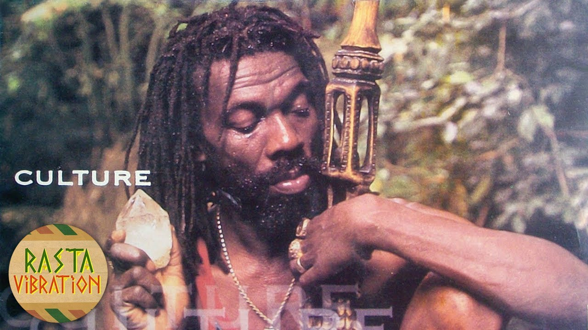
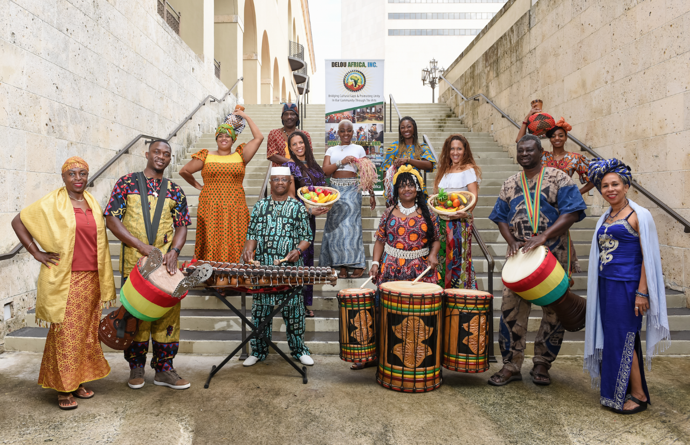
painting
painting, the expression of ideas and emotions, with the creation of certain aesthetic qualities, in a two-dimensional visual language. The elements of this language—its shapes, lines, colors, tones, and textures—are used in various ways to produce sensations of volume, space, movement, and light on a flat surface. These elements are combined into expressive patterns in order to represent real or supernatural phenomena, to interpret a narrative theme, or to create wholly abstract visual relationships. An artist’s decision to use a particular medium, such as tempera, fresco, oil, acrylic, watercolor or other water-based paints, ink, gouache, encaustic, or casein, as well as the choice of a particular form, such as mural, easel, panel, miniature, manuscript illumination, scroll, screen or fan, panorama, or any of a variety of modern forms, is based on the sensuous qualities and the expressive possibilities and limitations of those options. The choices of the medium and the form, as well as the artist’s own technique, combine to realize a unique visual image.
Earlier cultural traditions—of tribes, religions, guilds, royal courts, and states—largely controlled the craft, form, imagery, and subject matter of painting and determined its function, whether ritualistic, devotional, decorative, entertaining, or educational. Painters were employed more as skilled artisans than as creative artists. Later the notion of the “fine artist” developed in Asia and Renaissance Europe. Prominent painters were afforded the social status of scholars and courtiers; they signed their work, decided its design and often its subject and imagery, and established a more personal—if not always amicable—relationship with their patrons.
During the 19th century painters in Western societies began to lose their social position and secure patronage. Some artists countered the decline in patronage support by holding their own exhibitions and charging an entrance fee. Others earned an income through touring exhibitions of their work. The need to appeal to a marketplace had replaced the similar (if less impersonal) demands of patronage, and its effect on the art itself was probably similar as well. Generally, artists in the 20th century could reach an audience only through commercial galleries and public museums, although their work may have been occasionally reproduced in art periodicals. They may also have been assisted by financial awards or commissions from industry and the state. They had, however, gained the freedom to invent their own visual language and to experiment with new forms and unconventional materials and techniques. For example, some painters combined other media, such as sculpture, with painting to produce three-dimensional abstract designs. Other artists attached real objects to the canvas in collage fashion or used electricity to operate colored kinetic panels and boxes. Conceptual artists frequently expressed their ideas in the form of a proposal for an unrealizable project, while performance artists were an integral part of their own compositions. The restless endeavor to extend the boundaries of expression in art produced continuous international stylistic changes. The often bewildering succession of new movements in painting was further stimulated by the swift interchange of ideas by means of international art journals, traveling exhibitions, and art centers. Such exchanges accelerated in the 21st century with the explosion of international art fairs and the advent of social media, the latter of which offered not only new means of expression but direct communication between artists and their followers. Although stylistic movements were hard to identify, some artists addressed common societal issues, including the broad themes of racism, LGBTQ rights, and climate change.
This article is concerned with the elements and principles of design in painting and with the various mediums, forms, imagery, subject matter, and symbolism employed or adopted or created by the painter. For the history of painting in ancient Egypt. The development of painting in different regions is treated in a number of articles: Western painting; African art; Central Asian arts; Chinese painting; Islamic arts; Japanese art; Korean art; Native American art; Oceanic art and architecture; South Asian arts; Southeast Asian arts.
The design of a painting is its visual format: the arrangement of its lines, shapes, colors, tones, and textures into an expressive pattern. It is the sense of inevitability in this formal organization that gives a great painting its self-sufficiency and presence.
The colors and placing of the principal images in a design may be sometimes largely decided by representational and symbolic considerations. Yet it is the formal interplay of colors and shapes that alone is capable of communicating a particular mood, producing optical sensations of space, volume, movement, and light and creating forces of both harmony and tension, even when a painting’s narrative symbolism is obscure.

Line
Each of the design elements has special expressive qualities. Line, for example, is an intuitive, primeval convention for representing things; the simple linear imagery of young children’s drawings and prehistoric rock paintings is universally understood. The formal relationships of thick with thin lines, of broken with continuous, and of sinuous with jagged are forces of contrast and repetition in the design of many paintings in all periods of history. Variations in the painted contours of images also provide a direct method of describing the volume, weight, spatial position, light, and textural characteristics of things. The finest examples of this pictorial shorthand are found in Japanese ink painting, where an expressive economy and vitality of line is closely linked to a traditional mastery of calligraphy.
In addition to painted contours, a linear design is composed of all of the edges of tone and color masses, of the axial directions of images, and of the lines that are implied by alignments of shapes across the picture. The manner in which these various kinds of line are echoed and repeated animates the design. The artist, whether acting consciously or intuitively, also places them in relationship to one another across the picture, so that they weave a unifying rhythmic network throughout the painting.
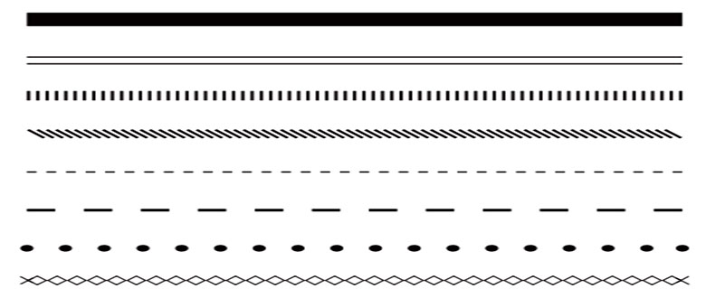
Shape and mass
Shape and mass, as elements of design, include all areas of different color, tone, and texture, as well as individual and grouped imag
Children instinctively represent the things they see by geometrical symbols. Not only have sophisticated modern artists, such as Paul Klee and Jean Dubuffet, borrowed this untutored imagery, but the more arresting and expressive shapes and masses in most styles of painting and those to which most people intuitively respond will generally be found to have been clearly based on such archetypal forms. A square or a circle will tend to dominate a design and will therefore often be found at its focal center—the square window framing Christ in Leonardo da Vinci’s Last Supper, for example, the hovering “sun” in an Adolph Gottlieb abstract, or the halo encircling a Christian or Buddhist deity. A firmly based triangular image or group of shapes seems reassuring, even uplifting, while the precarious balance implied by an inverted triangular shape or mass produces feelings of tension. Oval, lozenge, and rectangular forms suggest stability and protection and often surround vulnerable figures in narrative paintings.
There is generally a cellular unity, or “family likeness,” between the shapes and masses in a design similar to the visual harmony of all units to the whole observed in natural forms—the gills, fins, and scales in character with the overall shape of a fish, for example.
There is generally a cellular unity, or “family likeness,” between the shapes and masses in a design similar to the visual harmony of all units to the whole observed in natural forms—the gills, fins, and scales in character with the overall shape of a fish, for example.
The negative spaces between shapes and masses are also carefully considered by the artist, since they can be so adjusted as to enhance the action and character of the positive images. They can be as important to the design as time intervals in music or the voids of an architectural facade,
intervals in music or the voids of an architectural facade.
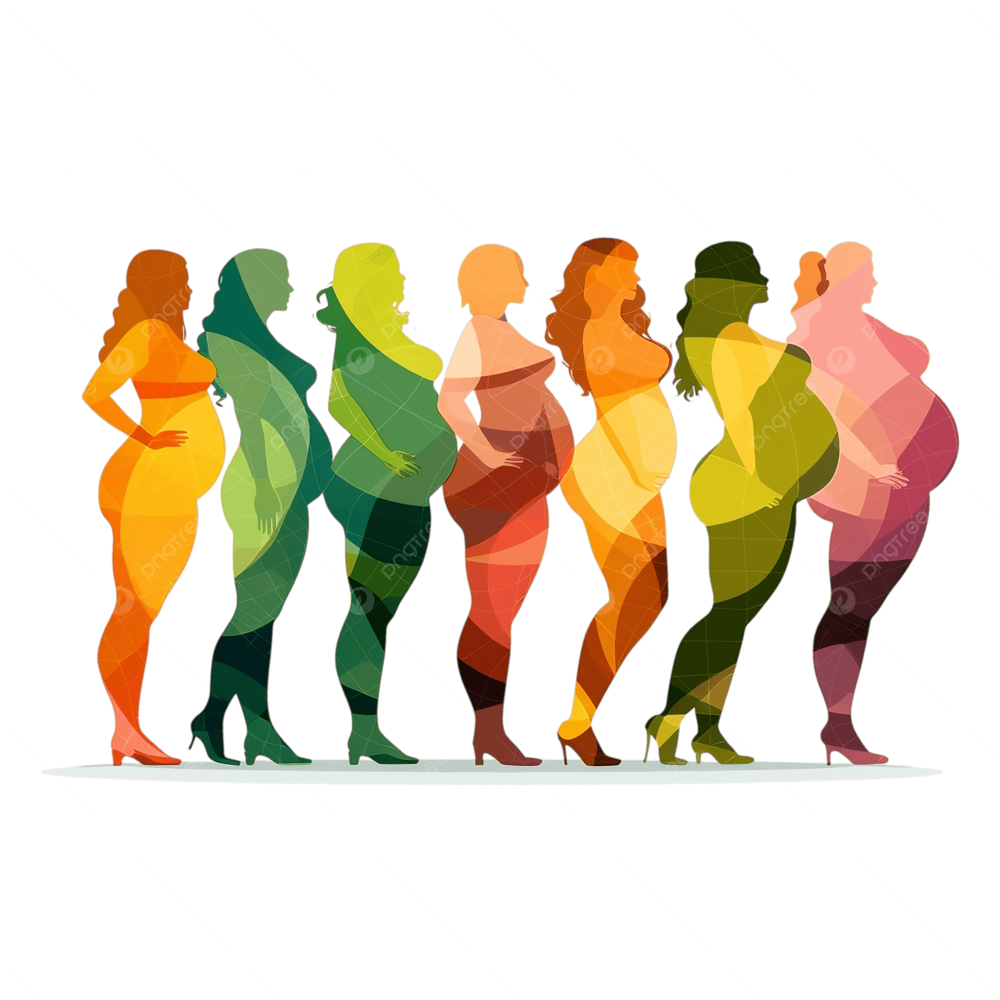
Color
In many styles and periods of painting, the functions of color are primarily decorative and descriptive, often serving merely to reinforce the expression of an idea or subject communicated essentially in terms of line and tone. In much of modern painting, however, the full-spectrum range of pigments available has allowed color to be the primary expressive element.
The principal dimensions of color in painting are the variables or attributes of hue, tone, and intensity. Red, yellow, and blue are the basic hues from which all others on the chromatic scale can be made by mixtures. These three opaque hues are the subtractive pigment primaries and should not be confused with the behavior of the additive triads and mixtures of transparent, colored light. Mixtures of primary pairs produce the secondary hues of orange, violet, and green. By increasing the amount of one primary in each of these mixtures, the tertiary colors of yellow-orange, orange-red, red-violet, violet-blue, blue-green, and green-yellow, respectively, are made. The primary colors, with their basic secondary and tertiary mixtures, can be usefully notated as the 12 segments of a circle, as conveniently depicted in the common color wheel. The secondary and tertiary color segments between a pair of parent primaries can then be seen to share a harmonious family relationship with one another—the yellow-orange, orange, and orange-red hues that lie between yellow and red, for example.
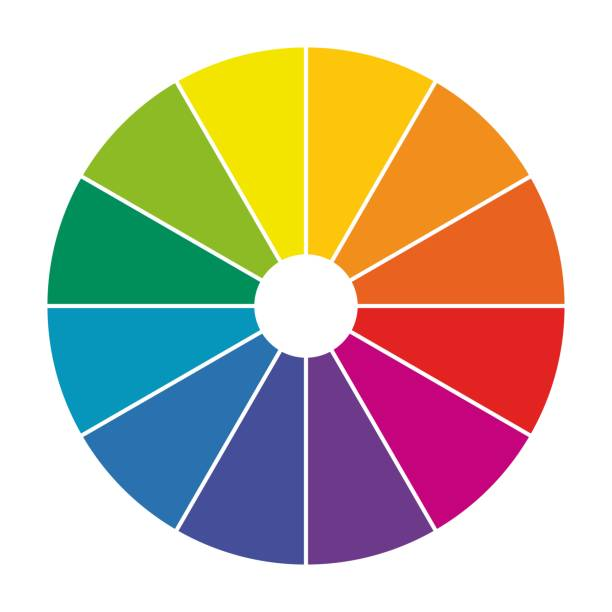
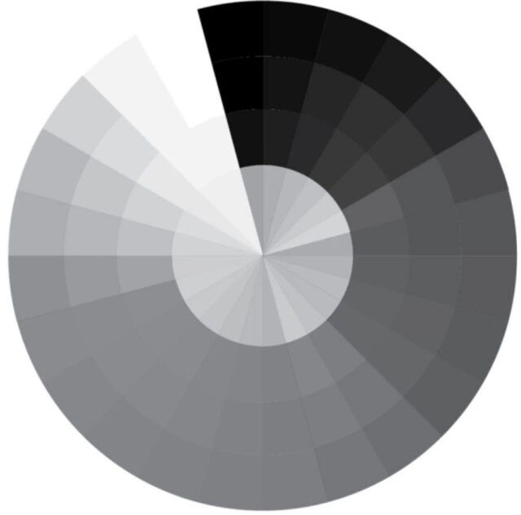

color wheels
color wheels(Left) Color wheel made up of the primary colors and their basic secondary and tertiary mixtures. (Right) Color wheel with approximate inherent tonal values.
The principal dimensions of color in painting are the variables or attributes of hue, tone, and intensity. Red, yellow, and blue are the basic hues from which all others on the chromatic scale can be made by mixtures. These three opaque hues are the subtractive pigment primaries and should not be confused with the behavior of the additive triads and mixtures of transparent, colored light. Mixtures of primary pairs produce the secondary hues of orange, violet, and green. By increasing the amount of one primary in each of these mixtures, the tertiary colors of yellow-orange, orange-red, red-violet, violet-blue, blue-green, and green-yellow, respectively, are made. The primary colors, with their basic secondary and tertiary mixtures, can be usefully notated as the 12 segments of a circle, as conveniently depicted in the common color wheel. The secondary and tertiary color segments between a pair of parent primaries can then be seen to share a harmonious family relationship with one another—the yellow-orange, orange, and orange-red hues that lie between yellow and red, for example.
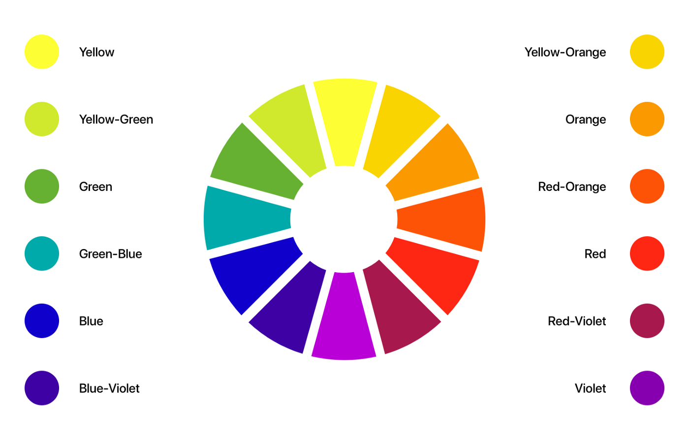
Colored Afterimages
colored afterimagesIf a person stares for about 30 seconds at the colored disk under a clear light and then fixes upon the empty space of the adjacent circle, colored afterimages will appear.
An achromatic color will seem more intense if it is surrounded by neutralized hues or juxtaposed with its complementary color. Complementaries are color opposites. The complementary color to one of the primary hues is the mixture of the other two; the complementary to red pigment, for example, is green—that is, blue mixed with yellow. The color wheel shows that the tertiaries also have their color opposites, the complementary to orange-red, for instance, being blue-green. Under clear light the complementary to any chroma, shade, or tint can be seen if one “fixates,” or stares at, one color intently for a few seconds then looks at a neutral, preferably white, surface. The color afterimage will appear to glow on the neutral surface. Mutual enhancement of color intensity results from juxtaposing a complementary pair, red becoming more intensely red, for instance, and green more fiercely green when these are contiguous than either would appear if surrounded by harmonious hues. The 19th-century physicist Michel-Eugène Chevreul referred to this mutual exaltation of opposites as the law of simultaneous contrast. Chevreul’s second law, of successive contrast, referred to the optical sensation that a complementary color halo appears gradually to surround an intense hue. This complementary glow is superimposed on surrounding weaker colors, a gray becoming greenish when juxtaposed with red, reddish in close relationship with green, yellowish against violet, and so on.

optical color change
optical color change(Top) By complementary action, the same gray pigment will appear greenish when adjacent to red but reddish if adjacent to green. (Bottom) A green hue will seem cool if surrounded by yellow but warm when surrounded by blue-green.
Hues containing a high proportion of blue (the violet to green range) appear cooler than those with a high content of yellow or red (the green-yellow to red-violet range). This difference in the temperature of hues in a particular painting is, of course, relative to the range and juxtaposition of colors in the design. A green will appear cool if surrounded by intense yellow, while it will seem warm against blue-green. The optical tendency for warm colors to advance before cold had been long exploited by European and Asian painters as a method of suggesting spatial depth (called atmospheric or aerial perspective). Changes in temperature and intensity can be observed in the atmospheric effects of nature, where the colors of distant forms become cooler, grayer, and bluish, while foreground planes and features appear more intense and usually warmer in color.
The apparent changes in a hue as it passes through zones of different color has enabled painters in many periods to create the illusion of having employed a wide range of pigment hues with, in fact, the use of very few. And, although painters had applied many of the optical principles of color behavior intuitively in the past, the publication of research findings by Chevreul and others stimulated the Neo-Impressionists and Post-Impressionists and the later Orphist and Op art painters to extend systematically the expressive possibilities of these principles in order to create illusions of volume and space and vibrating sensations of light and movement. Paul Cézanne, for example, demonstrated that subtle changes in the surface of a form and in its spatial relationship to others could be expressed primarily in facets of color, modulated by varying degrees of tone, intensity, and temperature and by the introduction of complementary color accents.
Emotive Color Relationships
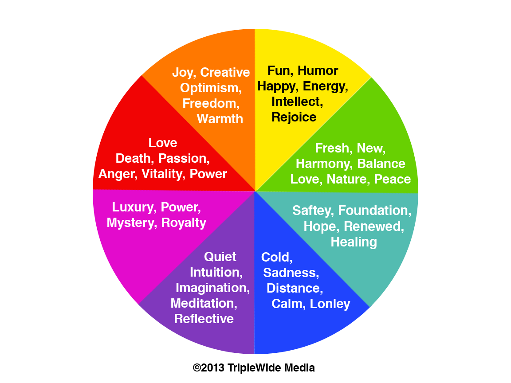
emotive color relationshipsAn identical pattern of shapes may express a different emotional mood through each color variation.
While the often complex religious and cultural color symbologies may be understood by very few, the emotional response to certain color combinations appears to be almost universal. Optical harmonies and discords seem to affect everyone in the same way, if in varying degrees. Thus, an image repeated in different schemes of color will express a different mood in each change.
Texture
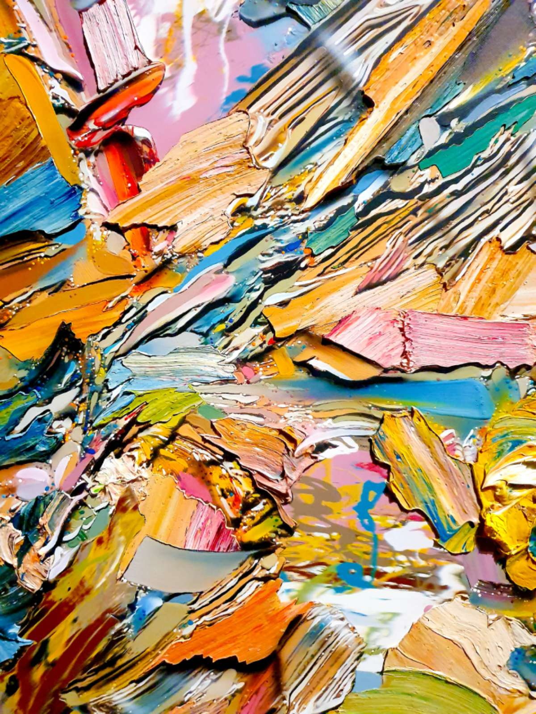
Pointillism (a term given to the Neo-Impressionist system of representing the shimmer of atmospheric light with spots of colored pigment) produced an overall granular texture. As an element of design, texture includes all areas of a painting enriched or animated by vibrating patterns of lines, shapes, tones, and colors, in addition to the tactile textures created by the plastic qualities of certain mediums. Decorative textures may be of geometrical repeat patterns, as in much of Indian, Islamic, and medieval European painting and other art, or of representations of patterns in nature, such as scattered leaves, falling snow, and flights of birds.
Volume and space
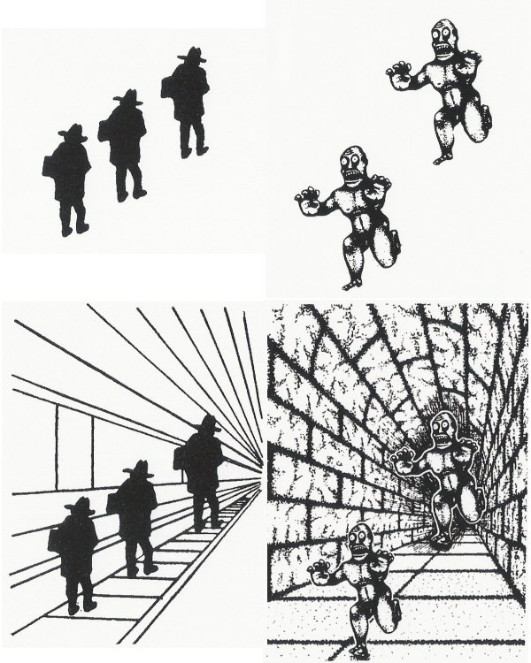
The perceptual and conceptual methods of representing volume and space on the flat surface of a painting are related to the two levels of understanding spatial relationships in everyday life.
Perceptual space is the view of things at a particular time and from a fixed position. This is the stationary window view recorded by the camera and represented in the later periods of ancient Greek and Roman paintings and in most Western schools of painting since the Renaissance. Illusions of perceptual space are generally created by use of the linear perspectival system, based on the observations that objects appear to the eye to shrink and parallel lines and planes to converge as they approach the horizon, or viewer’s eye level.
By the end of the 19th century Cézanne had flattened the conventional Renaissance picture space, tilting horizontal planes so that they appeared to push vertical forms and surfaces forward from the picture plane and toward the spectator. This illusion of the picture surface as an integrated structure in projecting low relief was developed further in the early 20th century by the Cubists. The conceptual, rotary perspective of a Cubist painting shows not only the components of things from different viewpoints but presents every plane of an object and its immediate surroundings simultaneously. This gives the composite impression of things in space that is gained by having examined their surfaces and construction from every angle.
In modern painting, both conceptual and perceptual methods of representing space are often combined. And, where the orbital movement of forms—which has been a basic element in European design since the Renaissance—was intended to hold the spectator’s attention within the frame, the expanding picture space in late 20th- and early 21st-century mural-size abstract paintings directs the eye outward to the surrounding wall, and their shapes and colors seem about to invade the observer’s own territory.
Time and movement
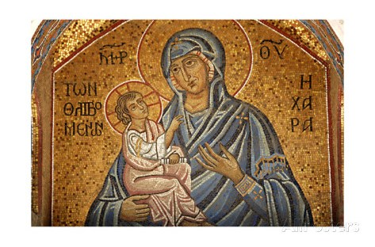
Time and movement in painting are not restricted to representations of physical energy, but they are elements of all design. Part of the viewer’s full experience of a great painting is to allow the arrangement of lines, shapes, and accents of tone or color to guide the eye across the picture surface at controlled tempos and rhythmic directions. These arrangements contribute overall to the expression of a particular mood, vision, and idea.
Centuries before cinematography, painters attempted to produce kinetic sensations on a flat surface. A mural of 2000 bce in an Egyptian tomb at Beni Hasan, for instance, is designed as a continuous strip sequence of wrestling holds and throws, so accurately articulated and notated that it might be photographed as an animated film cartoon. The gradual unrolling of a 12th-century Japanese hand scroll produces the visual sensation of a helicopter flight along a river valley, while the experience of walking to the end of a long, processional Renaissance mural by Andrea Mantegna or Benozzo Gozzoli is similar to that of having witnessed a passing pageant as a standing spectator.
In the Eastern and Western narrative convention of continuous representation, various incidents in a story were depicted together within one design, the chief characters in the drama easily identified as they reappeared in different situations and settings throughout the painting. In Byzantine murals and in Indian and medieval manuscript paintings, narrative sequences were depicted in grid patterns, each “compartment” of the design representing a visual chapter in a religious story or a mythological or historical epic.
The Cubists aimed to give the viewer the time experience of moving around static forms in order to examine their volume and structure and their relationships to the space surrounding them. In paintings such as Nude Descending a Staircase, Girl Running on a Balcony, and Dog on Leash, Marcel Duchamp and Giacomo Balla combined the Cubist technique of projected, interlocking planes with the superimposed time-motion sequences of cinematography. This technique enabled the artists to analyze the structural mechanics of forms, which are represented as moving in space past the viewer.
Principles Of Design
Because painting is a two-dimensional art, the flat pattern of lines and shapes is an important aspect of design, even for those painters concerned with creating illusions of great depth. And, since any mark made on the painting surface can be perceived as a spatial statement—for it rests upon it—there are also qualities of three-dimensional design in paintings composed primarily of flat shapes. Shapes in a painting, therefore, may be balanced with one another as units of a flat pattern and considered at the same time as components in a spatial design, balanced one behind another. A symmetrical balance of tone and color masses of equal weight creates a serene and sometimes monumental design, while a more dynamic effect is created by an asymmetrical balance.
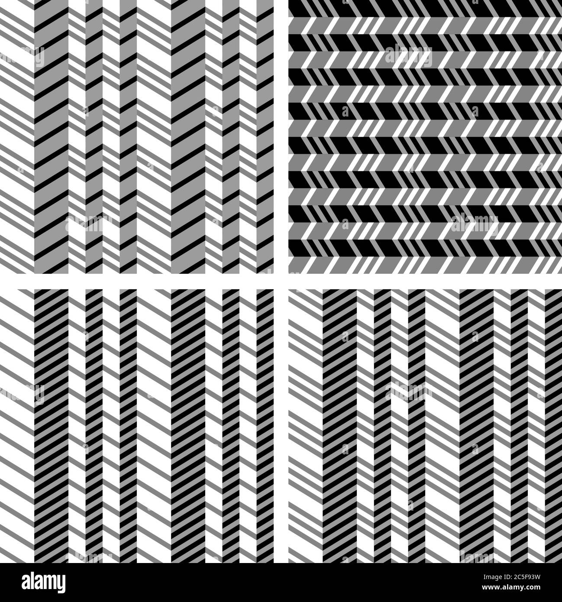
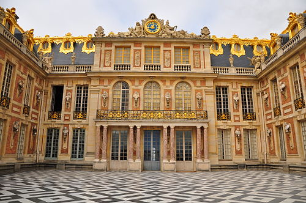
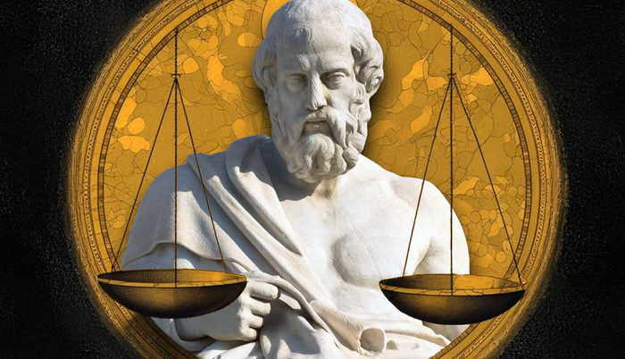
Design relationships between painting and other visual arts
The philosophy and spirit of a particular period in painting usually have been reflected in many of its other visual arts. The ideas and aspirations of the ancient cultures, of the Renaissance, Baroque, Rococo, and Neoclassical periods of Western art, and of the 19th-century Art Nouveau and Secessionist movements were expressed in much of the architecture, interior design, furniture, textiles, ceramics, dress design, and handicrafts, as well as in the fine arts, of their times. Following the Industrial Revolution, with the redundancy of handcraftmanship and the loss of direct communication between the fine artist and society, idealistic efforts to unite the arts and crafts in service to the community were made by William Morris in Victorian England and by the Bauhaus in 20th-century Germany. Although their aims were not fully realized, their influences, like those of the short-lived de Stijl and Constructivist movements, have been far-reaching, particularly in architectural, furniture, and typographic design.
Michelangelo and Leonardo da Vinci were painters, sculptors, and architects. Although few artists since have excelled in so wide a range of creative design, leading 20th-century painters expressed their ideas in many other mediums. In graphic design, for example, Pierre Bonnard, Henri Matisse, and Raoul Dufy produced posters and illustrated books; André Derain, Fernand Léger, Marc Chagall, Mikhail Larionov, Robert Rauschenberg, and David Hockney designed for the theater; Joan Miró, Pablo Picasso, and Chagall worked in ceramics; Sonia Delaunay designed textiles; Georges Braque and Salvador Dalí designed jewelry; and Dalí, Hans Richter, and Andy Warhol made films. Many of these, with other modern painters, were also sculptors and printmakers and designed for textiles, tapestries, mosaics, and stained glass, while there are few mediums of the visual arts that Picasso did not work in and revitalize.
In turn, painters have been stimulated by the imagery, techniques, and design of other visual arts. One of the earliest of these influences was possibly from the theater, where the ancient Greeks are thought to have been the first to employ the illusions of optical perspective. The discovery or reappraisal of design techniques and imagery in the art forms and processes of other cultures has been an important stimulus to the development of more recent styles of Western painting, whether or not their traditional significance have been fully understood. The influence of Japanese woodcut prints on Synthetism and the Nabis, for example, and of African sculpture on Cubism and the German Expressionists helped to create visual vocabularies and syntax with which to express new visions and ideas. The invention of photography introduced painters to new aspects of nature, while eventually prompting others to abandon representational painting altogether. Painters of everyday life, such as Edgar Degas, Henri de Toulouse-Lautrec, Édouard Vuillard, and Bonnard, exploited the design innovations of camera cutoffs, close-ups, and unconventional viewpoints in order to give the spectator the sensation of sharing an intimate picture space with the figures and objects in the painting.
Techniques and methods
Whether a painting reached completion by careful stages or was executed directly by a hit-or-miss alla prima method (in which pigments are laid on in a single application) was once largely determined by the ideals and established techniques of its cultural tradition. For example, the medieval European illuminator’s painstaking procedure, by which a complex linear pattern was gradually enriched with gold leaf and precious pigments, was contemporary with the Song Chinese Chan (Zen) practice of immediate, calligraphic brush painting, following a contemplative period of spiritual self-preparation. More recently, artists have decided the techniques and working methods best suited to their aims and temperaments. In France in the 1880s, for instance, Seurat might be working in his studio on drawings, tone studies, and color schemes in preparation for a large composition at the same time that, outdoors, Monet was endeavoring to capture the effects of afternoon light and atmosphere, while Cézanne analyzed the structure of the mountain Sainte-Victoire with deliberated brush strokes, laid as irrevocably as mosaic tesserae (small pieces, such as marble or tile).
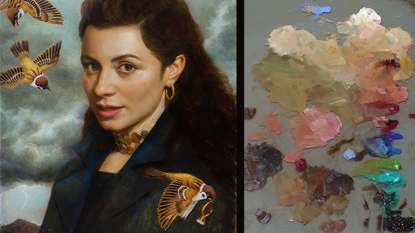
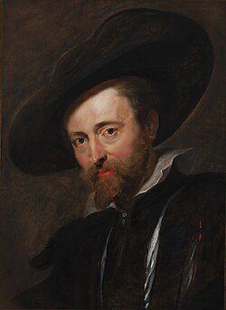
Mediums
By technical definition, mediums are the liquids added to paints to bind them and make them workable. They are discussed here, however, in the wider meaning of all the various paints, tools, supports, surfaces, and techniques employed by painters. The basis of all paints is variously colored pigment, ground to a fine powder. The different expressive capacities and characteristic final surface texture of each medium are determined by the vehicle with which it is bound and thinned, the nature and surface preparation of the support, and the tools and technique with which it

Pigments are derived from various natural and artificial sources. The oldest and most permanent pigments are the blacks, prepared from bone and charcoal, and the clay earths, such as raw umber and raw sienna, which can be changed by heating into darker, warmer browns. In early periods of painting, readily available pigments were few. Certain intense hues were obtainable only from the rarer minerals, such as cinnabar (orange-red vermilion), lapis lazuli (violet-blue ultramarine), and malachite (green). These were expensive and therefore reserved for focal accents and important symbolic features in the design. The opening of trade routes and the manufacture of synthetic substitutes gradually extended the range of colors available to painters.

Tempera
A tempera medium is dry pigment tempered with an emulsion and thinned with water. The ancient medium was in constant use in most world cultures, until in Europe it was gradually superseded by oil paints during the Renaissance. Tempera was the mural medium in the ancient dynasties of Egypt, Babylonia, Mycenean Greece, and China and was used to decorate the early Christian catacombs. It was employed on a variety of supports, from the stone stelae (or commemorative pillars), mummy cases, and papyrus rolls of ancient Egypt to the wood panels of Byzantine icons and altarpieces and the vellum leaves of medieval illuminated manuscripts.
The word tempera originally came from the verb temper, “to bring to a desired consistency.” Dry pigments are made usable by “tempering” them with a binding and adhesive vehicle. Such painting was distinguished from fresco painting, the colors for which contained no binder. Eventually, after the rise of oil painting, the word gained its present meaning.
The standard tempera vehicle is a natural emulsion, egg yolk, thinned with water. Variants of this vehicle have been developed to widen its use. Among the man-made emulsions are those prepared with whole egg and linseed oil, with gum, and with wax.

The special ground for tempera painting is a rigid wood or wallboard panel coated with several thin layers of gesso, a white, smooth, fully absorbent preparation made of burnt gypsum (or chalk, plaster of Paris, or whiting) and hide (or parchment) glue. A few minutes after application, tempera paint is sufficiently resistant to water to allow overpainting with more color. Thin, transparent layers of paint produce a clear, luminous effect, and the color tones of successive brushstrokes blend optically. Modern tempera paintings are sometimes varnished or overpainted with thin, transparent oil glazes to produce full, deep-toned results, or they are left unglazed for blond, or light, effects.
The great tradition of tempera painting was developed in Italy in the 13th and 14th centuries by Duccio di Buoninsegna and Giotto and continued in the work of Giovanni Bellini, Piero della Francesca, Carlo Crivelli, Sandro Botticelli, and Vittore Carpaccio. The 20th century saw a revival of tempera by American artists Ben Shahn, Andrew Wyeth, and Jacob Lawrence and by the British painter Lucian Freud. Tempera was largely replaced mid-century by acrylic paints.
Fresco
Fresco (Italian: “fresh”) is the traditional medium for painting directly onto a wall or ceiling. It is the oldest known painting medium, surviving in the prehistoric cave mural decorations and perfected in 16th-century Italy in the buon fresco method.
The cave paintings are thought to date from about 20,000–15,000 bce. Their pigments probably have been preserved by a natural sinter process of rainwater seeping through the limestone rocks to produce saturated bicarbonate. The colors were rubbed across rock walls and ceilings with sharpened solid lumps of the natural earths (yellow, red, and brown ocher). Outlines were drawn with black sticks of wood charcoal. The discovery of mixing dishes suggests that liquid pigment mixed with fat was also used and smeared with the hand. The subtle tonal gradations of color on animals painted in the Altamira and Lascaux caves appear to have been dabbed in two stages with fur pads, natural variations on the rock surface being exploited to assist in creating effects of volume. Feathers and frayed twigs may have been used in painting manes and tails.

These were not composite designs but separate scenes and individual studies that, like graffiti drawings, were added at different times, often one on top of another, by various artists. Paintings from approximately 18,000 to 11,000 years ago, during the Magdalenian period, exhibit astonishing powers of accurate observation and ability to represent movement. Women, warriors, horses, bison, bulls, boars, and ibex are depicted in scenes of ritual ceremony, battle, and hunting. Among the earliest images are imprinted and stenciled hands. Vigorous meanders, or “macaroni” linear designs, were traced with fingers dipped in liquid pigment.
Fresco secco
In the fresco secco, or lime-painting, method, the plastered surface of a wall is soaked with slaked lime. Lime-resistant pigments are applied swiftly before the plaster sets. Secco colors dry lighter than their tone at the time of application, producing the pale, matte, chalky quality of a distempered wall. Although the pigments are fused with the surface, they are not completely absorbed and may flake in time, as in sections of Giotto’s 14th-century San Francesco murals at Assisi. Secco painting was the prevailing medieval and early Renaissance medium and was revived in 18th-century Europe by artists such as Giovanni Battista Tiepolo, François Boucher, and Jean-Honoré Fragonard.

Buon fresco
Buon’, or “true,” fresco is the most-durable method of painting murals, since the pigments are completely fused with a damp plaster ground to become an integral part of the wall surface. The stone or brick wall is first prepared with a brown trullisatio scratch coat, or rough-cast plaster layer. This is then covered by the arricciato coat, on which the linear design of the preparatory cartoon is pounced or engraved by impressing the outlines into the moist, soft plaster with a bone or metal stylus. These lines were usually overworked in reddish sinopia pigment. A thin layer of fine plaster is then evenly spread, allowing the linear design to show through. Before this final intonaco ground sets, pigments thinned with water or slaked lime are applied rapidly with calf-hair and hog-bristle brushes; depth of color is achieved by a succession of quick-drying glazes. Being prepared with slaked lime, the plaster becomes saturated with an aqueous solution of hydrate of lime, which takes up carbonic acid from the air as it soaks into the paint. Carbonate of lime is produced and acts as a permanent pigment binder. Pigment particles crystallize in the plaster, fusing it with the surface to produce the characteristic luster of buonfresco colors. When dry, these are matte and lighter in tone. Colors are restricted to the range of lime-resistant earth pigments. Mineral colors such as blue, affected by lime, are applied over earth pigment when the plaster is dry.
The intonaco coat is laid only across an area sufficient for painting before the plaster sets. The joins between each successive giornate (“day’s work”) are sometimes visible. Alterations must be made by immediate washing or scraping; minor retouching to set plaster is possible with casein or egg tempera, but major corrections necessitate breaking away the intonaco and replastering. The swift execution demanded stimulates bold designs in broad masses of color with a calligraphic vitality of brush marks.
No ancient Greek buon frescoes now exist, but forms of the technique survive in the Pompeian villas of the 1st century ce and earlier, in Chinese tombs at Liaoyang, Manchuria, and in the 6th-century Indian caves at Ajanta. Among the finest buon fresco murals are those by Michelangelo in the Sistine Chapel and by Raphael in the Stanze of the Vatican. Other notable examples from the Italian Renaissance can be seen in Florence: painted by Andrea Orcagna in the Museo dell’Opera di Santa Croce, by Gozzoli in the chapel of the Palazzo Medici-Riccardi, and by Domenico Ghirlandaio in the church of Santa Maria Novella. Buon fresco painting is unsuited to the damp, cold climate of northern countries, and there is now some concern for the preservation of frescoes in the sulfurous atmosphere of even many southern cities. Buon fresco was successfully revived by the Mexican mural painters Diego Rivera, José Orozco, and Rufino Tamayo.

Sgraffito
Sgraffito (Italian graffiare, “to scratch”) is a form of fresco painting for exterior walls. A rough plaster undercoat is followed by thin plaster layers, each stained with a different lime-fast color. These coats are covered by a fine-grain mortar finishing surface. The plaster is then engraved with knives and gouges at different levels to reveal the various colored layers beneath. The sintered-lime process binds the colors. The surface of modern sgraffito frescoes is often enriched with textures made by impressing nails and machine parts, combined with mosaics of stone, glass, plastic, and metal tesserae.
Sgraffito has been a traditional folk art in Europe since the Middle Ages and was practiced as a fine art in 13th-century Germany. It was revived in updated and modified ways by 20th-century artists such as Max Ernst and Jean Dubuffet.

Oil paints
Oil paints are made by mixing dry pigment powder with refined linseed oil to a paste, which is then milled in order to disperse the pigment particles throughout the oil vehicle. According to the 1st-century Roman scholar Pliny the Elder, whose writings the Flemish painters Hubert and Jan van Eyck are thought to have studied, the Romans used oil colors for shield painting. The earliest use of oil as a fine-art medium is generally attributed to 15th-century European painters, such as Giovanni Bellini and the van Eycks, who glazed oil color over a glue-tempera underpainting. It is also thought probable, however, that medieval manuscript illuminators had been using oil glazes in order to achieve greater depth of color and more subtle tonal transitions than their tempera medium allowed.
Oils have been used on linen, burlap, cotton, wood, hide, rock, stone, concrete, paper, cardboard, aluminum, copper, plywood, and processed boards, such as masonite, pressed wood, and hardboard. The surface of rigid panels is traditionally prepared with gesso and that of canvas with one or more coats of white acrylic resin emulsion or with a coat of animal glue followed by thin layers of white-lead oil primer. Oil paints can be applied undiluted to these prepared surfaces or can be used thinned with pure gum turpentine or its substitute, white mineral spirit. The colors are slow drying; the safest dryer to speed the process is cobalt siccative.

An oil glaze is a transparent wash of pigment, traditionally thinned with an oleoresin or with stand oil (a concentrate of linseed oil). Glazes can be used to create deep, glowing shadows and to bring contrasted colors into closer harmony beneath a unifying tinted film. Scumbling is the technique of scrubbing an undiluted, opaque, and generally pale pigment across others for special textural effects or to raise the key of a dark-colored area.
Hog-bristle brushes are used for much of the painting, with pointed, red sable-hair brushes generally preferred for outlines and fine details. Oils, however, are the most plastic and responsive of all painting mediums and can be handled with all manner of tools. The later works of Titian and Rembrandt, for example, appear to have been executed with thumbs, fingers, rags, spatulas, and brush handles. With these and other unconventional tools and techniques, oil painters create pigment textures ranging from delicate tonal modulations to unvarying, mechanical finishes and from clotted, impasto ridges of paint to barely perceptible stains.
The tempera-underpainting-oil-glaze technique was practiced into the 17th century. Artists such as Titian, El Greco, Rubens, and Diego Velázquez, however, used oil pigments alone and, employing a method similar to pastel painting, applied them directly to the brownish ground with which they had tinted the white priming. Contours and shadows were stained in streaks and washes of diluted paint, while lighter areas were created with dry, opaque scumbles, the tinted ground meanwhile providing the halftones and often remaining untouched for passages of local or reflected color in the completed picture. This use of oil paint was particularly suited to expressing atmospheric effects and to creating chiaroscuro, or light and dark, patterns. It also encouraged a bravura handling of paint, where stabs, flourishes, lifts, and pressures of the brush economically described the most subtle changes of form, texture, and color according to the influence exerted by the tinted ground through the varying thicknesses of overlaid pigment. This method was still practiced by the 19th-century painters, such as John Constable, J.M.W. Turner, Eugène Delacroix, and Honoré Daumier. The Impressionists, however, found the luminosity of a brilliant white ground essential to the alla prima technique with which they represented the color intensities and shifting lights of their plein air (open air) subjects. Most oil paintings since then have been executed on white surfaces.
The rapid deterioration of Leonardo’s 15th-century Last Supper (last restored 1978–99), which was painted in oils on plaster, may have deterred later artists from using the medium directly on a wall surface. The likelihood of eventual warping also prohibited using the large number of braced wood panels required to make an alternative support for an extensive mural painting in oils. Because canvas can be woven to any length and because an oil-painted surface is elastic, mural paintings could be executed in the studio and rolled and restretched on a wooden framework at the site or marouflaged (fastened with an adhesive) directly onto a wall surface. In addition to the immense studio canvases painted for particular sites by artists such as Jacopo Tintoretto, Paolo Veronese, Delacroix, Pierre-Cécile Puvis de Chavannes, and Claude Monet, the use of canvas has made it possible for mural-size, modern oil paintings to be transported for exhibition to all parts of the world.

The tractable nature of the oil medium has sometimes encouraged careless craftsmanship. Working over partly dry pigment or priming may produce a wrinkled surface. The excessive use of oil as a vehicle causes colors to yellow and darken, while cracking, blooming, powdering, and flaking can result from poor priming, overthinning with turpentine, or the use of varnish dryers and other spirits. Color changes may also occur through the use of chemically incompatible pigment mixtures or from the fading of fugitive synthetic hues, such as crimson lakes, the brilliant red pigment favored by Pierre-Auguste Renoir.
sculpture
sculpture, an artistic form in which hard or plastic materials are worked into three-dimensional art objects. The designs may be embodied in freestanding objects, in reliefs on surfaces, or in environments ranging from tableaux to contexts that envelop the spectator. An enormous variety of media may be used, including clay, wax, stone, metal, fabric, glass, wood, plaster, rubber, and random “found” objects. Materials may be carved, modeled, molded, cast, wrought, welded, sewn, assembled, or otherwise shaped and combined.

Sculpture is not a fixed term that applies to a permanently circumscribed category of objects or sets of activities. It is, rather, the name of an art that grows and changes and is continually extending the range of its activities and evolving new kinds of objects. The scope of the term was much wider in the second half of the 20th century than it had been only two or three decades before, and in the fluid state of the visual arts in the 21st century nobody can predict what its future extensions are likely to be.
Certain features which in previous centuries were considered essential to the art of sculpture are not present in a great deal of modern sculpture and can no longer form part of its definition. One of the most important of these is representation. Before the 20th century, sculpture was considered a representational art, one that imitated forms in life, most often human figures but also inanimate objects, such as game, utensils, and books. Since the turn of the 20th century, however, sculpture has also included nonrepresentational forms. It has long been accepted that the forms of such functional three-dimensional objects as furniture, pots, and buildings may be expressive and beautiful without being in any way representational; but it was only in the 20th century that nonfunctional, nonrepresentational, three-dimensional works of art began to be produced.
Before the 20th century, sculpture was considered primarily an art of solid form, or mass. It is true that the negative elements of sculpture—the voids and hollows within and between its solid forms—have always been to some extent an integral part of its design, but their role was a secondary one. In a great deal of modern sculpture, however, the focus of attention has shifted, and the spatial aspects have become dominant. Spatial sculpture is now a generally accepted branch of the art of sculpture.

It was also taken for granted in the sculpture of the past that its components were of a constant shape and size and, with the exception of items such as Augustus Saint-Gaudens’s Diana (a monumental weather vane), did not move. With the recent development of kinetic sculpture, neither the immobility nor immutability of its form can any longer be considered essential to the art of sculpture.
Finally, sculpture since the 20th century has not been confined to the two traditional forming processes of carving and modeling or to such traditional natural materials as stone, metal, wood, ivory, bone, and clay. Because present-day sculptors use any materials and methods of manufacture that will serve their purposes, the art of sculpture can no longer be identified with any special materials or techniques.
Through all these changes, there is probably only one thing that has remained constant in the art of sculpture, and it is this that emerges as the central and abiding concern of sculptors: the art of sculpture is the branch of the visual arts that is especially concerned with the creation of form in three dimensions.
Sculpture may be either in the round or in relief. A sculpture in the round is a separate, detached object in its own right, leading the same kind of independent existence in space as a human body or a chair. A relief does not have this kind of independence. It projects from and is attached to or is an integral part of something else that serves either as a background against which it is set or a matrix from which it emerges.
The actual three-dimensionality of sculpture
The actual three-dimensionality of sculpture in the round limits its scope in certain respects in comparison with the scope of painting. Sculpture cannot conjure the illusion of space by purely optical means or invest its forms with atmosphere and light as painting can. It does have a kind of reality, a vivid physical presence that is denied to the pictorial arts. The forms of sculpture are tangible as well as visible, and they can appeal strongly and directly to both tactile and visual sensibilities. Even the visually impaired, including those who are congenitally blind, can produce and appreciate certain kinds of sculpture. It was, in fact, argued by the 20th-century art critic Sir Herbert Read that sculpture should be regarded as primarily an art of touch and that the roots of sculptural sensibility can be traced to the pleasure one experiences in fondling things.
.

All three-dimensional forms are perceived as having an expressive character as well as purely geometric properties. They strike the observer as delicate, aggressive, flowing, taut, relaxed, dynamic, soft, and so on. By exploiting the expressive qualities of form, a sculptor is able to create images in which subject matter and expressiveness of form are mutually reinforcing. Such images go beyond the mere presentation of fact and communicate a wide range of subtle and powerful feelings.
The aesthetic raw material of sculpture is, so to speak, the whole realm of expressive three-dimensional form. A sculpture may draw upon what already exists in the endless variety of natural and man-made form, or it may be an art of pure invention. It has been used to express a vast range of human emotions and feelings from the most tender and delicate to the most violent and ecstatic.
All human beings, intimately involved from birth with the world of three-dimensional form, learn something of its structural and expressive properties and develop emotional responses to them. This combination of understanding and sensitive response, often called a sense of form, can be cultivated and refined. It is to this sense of form that the art of sculpture primarily appeals.
Elements and principles of sculptural design
The two most important elements of sculpture—mass and space—are, of course, separable only in thought. All sculpture is made of a material substance that has mass and exists in three-dimensional space. The mass of sculpture is thus the solid, material, space-occupying bulk that is contained within its surfaces. Space enters into the design of sculpture in three main ways: the material components of the sculpture extend into or move through space; they may enclose or enfold space, thus creating hollows and voids within the sculpture; and they may relate one to another across space. Volume, surface, light and shade, and colour are supporting elements of sculpture.
Elements of design
The amount of importance attached to either mass or space in the design of sculpture varies considerably. In Egyptian sculpture and in most of the sculpture of the 20th-century artist Constantin Brancusi, for example, mass is paramount, and most of the sculptor’s thought was devoted to shaping a lump of solid material. In 20th-century works by Antoine Pevsner or Naum Gabo, on the other hand, mass is reduced to a minimum, consisting only of transparent sheets of plastic or thin metal rods. The solid form of the components themselves is of little importance; their main function is to create movement through space and to enclose space. In works by such 20th-century sculptors as Henry Moore and Barbara Hepworth, the elements of space and mass are treated as more or less equal partners.

It is not possible to see the whole of a fully three-dimensional form at once. The observer can only see the whole of it if he turns it around or goes around it himself. For this reason it is sometimes mistakenly assumed that sculpture must be designed primarily to present a series of satisfactory projective views and that this multiplicity of views constitutes the main difference between sculpture and the pictorial arts, which present only one view of their subject. Such an attitude toward sculpture ignores the fact that it is possible to apprehend solid forms as volumes, to conceive an idea of them in the round from any one aspect. A great deal of sculpture is designed to be apprehended primarily as volume.
A single volume is the fundamental unit of three-dimensional solid form that can be conceived in the round. Some sculptures consist of only one volume, others are configurations of a number of volumes. The human figure is often treated by sculptors as a configuration of volumes, each of which corresponds to a major part of the body, such as the head, neck, thorax, and thigh.

The surfaces of sculpture are in fact all that one actually sees. It is from their inflections that one makes inferences about the internal structure of the sculpture. A surface has, so to speak, two aspects: it contains and defines the internal structure of the masses of the sculpture, and it is the part of the sculpture that enters into relations with external space.
The expressive character of different kinds of surfaces is of the utmost importance in sculpture. Double-curved convex surfaces suggest fullness, containment, enclosure, the outward pressure of internal forces. In the aesthetics of Indian sculpture such surfaces have a special metaphysical significance. Representing the encroachment of space into the mass of the sculpture, concave surfaces suggest the action of external forces and are often indicative of collapse or erosion. Flat surfaces tend to convey a feeling of material hardness and rigidity; they are unbending or unyielding, unaffected by either internal or external pressures. Surfaces that are convex in one curvature and concave in the other can suggest the operation of internal pressures and at the same time a receptivity to the influence of external forces. They are associated with growth, with expansion into space.
Unlike the painter, who creates light effects within the work, the sculptor manipulates actual light on the work. The distribution of light and shade over the forms of his or her work depends upon the direction and intensity of light from external sources. Nevertheless, to some extent he or she can determine the kinds of effect this external light will have. If the artist knows where the work is to be sited, he or she can adapt it to the kind of light it is likely to receive. The brilliant overhead sunlight of Egypt and India demands a different treatment from the dim interior light of a northern medieval cathedral. Then again, it is possible to create effects of light and shade, or chiaroscuro, by cutting or modeling deep, shadow-catching hollows and prominent, highlighted ridges. Many late Gothic sculptors used light and shade as a powerful expressive feature of their work, aiming at a mysterious obscurity, with forms broken by shadow emerging from a dark background. Greek, Indian, and most Italian Renaissance sculptors shaped the forms of their work to receive light in a way that makes the whole work radiantly clear.
The colouring of sculpture may be either natural or applied. In the recent past, sculptors became more aware than ever before of the inherent beauty of sculptural materials. Under the slogan of “truth to materials” many of them worked their materials in ways that exploited their natural properties, including colour and texture. More recently, however, there has been a growing tendency to use bright artificial colouring as an important element in the design of sculpture.
In the ancient world and during the Middle Ages almost all sculpture was artificially coloured, usually in a bold and decorative rather than a naturalistic manner. The sculptured portal of a cathedral, for example, would be coloured and gilded with all the brilliance of a contemporary illuminated manuscript. Combinations of differently coloured materials, such as the ivory and gold of some Greek sculpture, were not unknown before the 17th century; but the early Baroque sculptor Gian Lorenzo Bernini greatly extended the practice by combining variously coloured marbles with white marble and gilt bronze.

Principles of design
It is doubtful whether any principles of design are universal in the art of sculpture, for the principles that govern the organization of the elements of sculpture into expressive compositions differ from style to style. In fact, distinctions made among the major styles of sculpture are largely based on a recognition of differences in the principles of design that underlie them. Thus, the art historian Erwin Panofsky was attempting to define a difference of principle in the design of Romanesque and Gothic sculpture when he stated that the forms of Romanesque were conceived as projections from a plane outside themselves, while those of Gothic were conceived as being centred on an axis within themselves. The “principle of axiality” was considered by Panofsky to be “the essential principle of classical statuary,” which Gothic had rediscovered.
The principles of sculptural design govern the approaches of sculptors to such fundamental matters as orientation, proportion, scale, articulation, and balance.
For conceiving and describing the orientation of the forms of sculpture in relation to each other, to a spectator, and to their surroundings, some kind of spatial scheme of reference is required. This is provided by a system of axes and planes of reference.
An axis
An axis is an imaginary centre line through a symmetrical or near symmetrical volume or group of volumes that suggests the gravitational pivot of the mass. Thus, all the main components of the human body have axes of their own, while an upright figure has a single vertical axis running through its entire length. Volumes may rotate or tilt on their axes.
Planes of reference are imaginary planes to which the movements, positions, and directions of volumes, axes, and surfaces may be referred. The principal planes of reference are the frontal, the horizontal, and the two profile planes.

The principles that govern the characteristic poses and spatial compositions of upright figures in different styles of sculpture are formulated with reference to axes and the four cardinal planes: for example, the principle of axiality already referred to; the principle of frontality, which governs the design of Archaic sculpture; the characteristic contrapposto (pose in which parts of the body, such as upper and lower, tilt or even twist in opposite directions) of Michelangelo’s figures; and in standing Greek sculpture of the Classical period the frequently used balanced “chiastic” pose (stance in which the body weight is taken principally on one leg, thereby creating a contrast of tension and relaxation between the opposite sides of a figure).
Proportional relations exist among linear dimensions, areas, and volumes and masses. All three types of proportion coexist and interact in sculpture, contributing to its expressiveness and beauty. Attitudes toward proportion differ considerably among sculptors. Some sculptors, both abstract and figurative, use mathematical systems of proportion; for example, the refinement and idealization of natural human proportions was a major preoccupation of Greek sculptors. Indian sculptors employed iconometric canons, or systems of carefully related proportions, that determined the proportions of all significant dimensions of the human figure. African and other sculptors base the proportions of their figures on the subjective importance of the parts of the body. Unnatural proportions may be used for expressive purposes or to accommodate a sculpture to its surroundings. The elongation of the figures on the Portail Royal (“Royal Portal”) of Chartres cathedral does both: it enhances their otherworldliness and also integrates them with the columnar architecture.
Sometimes it is necessary to adapt the proportions of sculpture to suit its position in relation to a viewer. A figure sited high on a building, for example, is usually made larger in its upper parts in order to counteract the effects of foreshortening. This should be allowed for when a sculpture intended for such a position is exhibited on eye level in a museum.

The scale of sculpture must sometimes be considered in relation to the scale of its surroundings. When it is one element in a larger complex, such as the facade of a building, it must be in scale with the rest. Another important consideration that sculptors must take into account when designing outdoor sculpture is the tendency of sculpture in the open air—particularly when viewed against the sky—to appear less massive than it does in a studio. Because one tends to relate the scale of sculpture to one’s own human physical dimensions, the emotional impact of a colossal figure and a small figurine are quite different.
victory stele of Naram-Sin
In ancient and medieval sculpture the relative scale of the figures in a composition is often determined by their importance; e.g., enslaved persons are much smaller than kings or nobles. This is sometimes known as hierarchic scale.

The joining of one form to another may be accomplished in a variety of ways. In much of the work of the 19th-century French sculptor Auguste Rodin, there are no clear boundaries, and one form is merged with another in an impressionistic manner to create a continuously flowing surface. In works by the Greek sculptor Praxiteles, the forms are softly and subtly blended by means of smooth, blurred transitions. The volumes of Indian sculpture and the surface anatomy of male figures in the style of the Greek sculptor Polyclitus are sharply defined and clearly articulated. One of the main distinctions between the work of Italian and northern Renaissance sculptors lies in the Italians’ preference for compositions made up of clearly articulated, distinct units of form and the tendency of the northern Europeans to subordinate the individual parts to the allover flow of the composition.

Relationships to other arts
Sculpture has long been closely related to architecture through its role as architectural decoration and also at the level of design. Architecture, like sculpture, is concerned with three-dimensional form; and, although the central problem in the design of buildings is the organization of space rather than mass, there are styles of architecture that are effective largely through the quality and organization of their solid forms. Ancient styles of stone architecture, particularly Egyptian, Greek, and Mexican, tend to treat their components in a sculptural manner. Moreover, most buildings viewed from the outside are compositions of masses. The growth of spatial sculpture is so intimately related to the opening up and lightening of architecture, which the development of modern building technology has made possible, that many 20th-century sculptors can be said to have treated their work in an architectural manner.

Materials
Any material that can be shaped in three dimensions can be used sculpturally. Certain materials, by virtue of their structural and aesthetic properties and their availability, have proved especially suitable. The most important of these are stone, wood, metal, clay, ivory, and plaster. There are also a number of materials that have only recently come into use.
Primary materials
Stones
Throughout history, stone has been the principal material of monumental sculpture. There are practical reasons for this: many types of stone are highly resistant to the weather and therefore suitable for external use; stone is available in all parts of the world and can be obtained in large blocks; many stones have a fairly homogeneous texture and a uniform hardness that make them suitable for carving; stone has been the chief material used for the monumental architecture with which so much sculpture has been associated.
Stones belonging to all three main categories of rock formation have been used in sculpture. Igneous rocks, which are formed by the cooling of molten masses of mineral as they approach the Earth’s surface, include granite, diorite, basalt, and obsidian. These are some of the hardest stones used for sculpture. Sedimentary rocks, which include sandstones and limestones, are formed from accumulated deposits of mineral and organic substances. Sandstones are agglomerations of particles of eroded stone held together by a cementing substance. Limestones are formed chiefly from the calcareous remains of organisms. Alabaster (gypsum), also a sedimentary rock, is a chemical deposit. Many varieties of sandstone and limestone, which vary greatly in quality and suitability for carving, are used for sculpture. Because of their method of formation, many sedimentary rocks have pronounced strata and are rich in fossils.

Metamorphic rocks result from changes brought about in the structure of sedimentary and igneous rocks by extreme pressure or heat. The most well-known metamorphic rocks used in sculpture are the marbles, which are recrystallized limestones. Italian Carrara marble, the best known, was used by Roman and Renaissance sculptors, especially Michelangelo, and is still widely used. The best-known varieties used by Greek sculptors, with whom marble was more popular than any other stone, are Pentelic—from which the Parthenon and its sculpture are made—and Parian.

Because stone is extremely heavy and lacks tensile strength, it is easily fractured if carved too thinly and not properly supported. A massive treatment without vulnerable projections, as in Egyptian and pre-Columbian American Indian sculpture, is therefore usually preferred. Some stones, however, can be treated more freely and openly; marble in particular has been treated by some European sculptors with almost the same freedom as bronze, but such displays of virtuosity are achieved by overcoming rather than submitting to the properties of the material itself.
The colours and textures of stone are among its most delightful properties. Some stones are fine-grained and can be carved with delicate detail and finished with a high polish; others are coarse-grained and demand a broader treatment. Pure white Carrara marble, which has a translucent quality, seems to glow and responds to light in a delicate, subtle manner. (These properties of marble were brilliantly exploited by 15th-century Italian sculptors such as Donatello and Desiderio da Settignano.) The colouring of granite is not uniform but has a salt-and-pepper quality and may glint with mica and quartz crystals. It may be predominantly black or white or a variety of grays, pinks, and reds. Sandstones vary in texture and are often warmly coloured in a range of buffs, pinks, and reds. Limestones vary greatly in colour, and the presence of fossils may add to the interest of their surfaces. A number of stones are richly variegated in colour by the irregular veining that runs through them
Hardstones, or semiprecious stones, constitute a special group, which includes some of the most beautiful of all substances. The working of these stones, along with the working of more precious gemstones, is usually considered as part of the glyptic (gem carving or engraving), or lapidary, arts, but many artifacts produced from them can be considered small-scale sculpture. They are often harder to work than steel. First among the hardstones used for sculpture is jade, which was venerated by the ancient Chinese, who worked it, together with other hardstones, with extreme skill. It was also used sculpturally by Maya and Mexican artists. Other important hardstones are rock crystal, rose quartz, amethyst, agate, and jasper.

Woods
The principal material of sculpture in Africa, Oceania, and North America, wood has also been used by every great civilization; it was used extensively during the Middle Ages, for example, especially in Germany and central Europe. Among modern sculptors who have used wood for important works are Ernst Barlach, Ossip Zadkine, and Henry Moore.
Both hardwoods and softwoods are used for sculpture. Some are close-grained, and they cut like cheese; others are open-grained and stringy. The fibrous structure of wood gives it considerable tensile strength, so that it may be carved thinly and with greater freedom than stone. For large or complex open compositions, a number of pieces of wood may be jointed. Wood is used mainly for indoor sculpture, for it is not as tough or durable as stone; changes of humidity and temperature may cause it to split, and it is subject to attack by insects and fungus. The grain of wood is one of its most attractive features, giving variety of pattern and texture to its surfaces. Its colours, too, are subtle and varied. In general, wood has a warmth that stone does not have, but it lacks the massive dignity and weight of stone.

The principal woods for sculpture are oak, mahogany, limewood, walnut, elm, pine, cedar, boxwood, pear, and ebony; but many others are also used. The sizes of wood available are limited by the sizes of trees; North American Indians, for example, could carve gigantic totem poles in pine, but boxwood is available only in small pieces.
In the 20th century, wood was used by many sculptors as a medium for construction as well as for carving. Laminated timbers, chipboards, and timber in block and plank form can be glued, jointed, screwed, or bolted together, and given a variety of finishes.
Metals
Wherever metal technologies have been developed, metals have been used for sculpture. The amount of metal sculpture that has survived from the ancient world does not properly reflect the extent to which it was used, for vast quantities have been plundered and melted down. Countless ancient metal sculptures have been lost in this way, as has almost all the goldwork of pre-Columbian American Indians.
The metal most used for sculpture is bronze, which is basically an alloy of copper and tin; but gold, silver, aluminum, copper, brass, lead, and iron have also been widely used. Most metals are extremely strong, hard, and durable, with a tensile strength that permits a much greater freedom of design than is possible in either stone or wood. A life-size bronze figure that is firmly attached to a base needs no support other than its own feet and may even be poised on one foot. Considerable attenuation of form is also possible without risk of fracture.

The colour, brilliant lustre, and reflectivity of metal surfaces have been highly valued and made full use of in sculpture although, since the Renaissance, artificial patinas have generally been preferred as finishes for bronze.
Metals can be worked in a variety of ways in order to produce sculpture. They can be cast—that is, melted and poured into molds; squeezed under pressure into dies, as in coin making; or worked directly—for example, by hammering, bending, cutting, welding, and repoussé (hammered or pressed in relief).
Important traditions of bronze sculpture are Greek, Roman, Indian (especially Chola), African (Bini and Yoruba), Italian Renaissance, and Chinese. Gold was used to great effect for small-scale works in pre-Columbian America and medieval Europe. A fairly recent discovery, aluminum has been used a great deal by modern sculptors. Iron has not been used much as a casting material, but in recent years it has become a popular material for direct working by techniques similar to those of the blacksmith. Sheet metal is one of the principal materials used nowadays for constructional sculpture. Stainless steel in sheet form has been used effectively by the American sculptor David Smith.

Clay
Clay is one of the most common and easily obtainable of all materials. Used for modeling animal and human figures long before men discovered how to fire pots, it has been one of the sculptor’s chief materials ever since.
Clay has four properties that account for its widespread use: when moist, it is one of the most plastic of all substances, easily modeled and capable of registering the most detailed impressions; when partially dried out to a leather-hard state or completely dried, it can be carved and scraped; when mixed with enough water, it becomes a creamy liquid known as slip, which may be poured into molds and allowed to dry; when fired to temperatures of between 700 and 1,400 °C (1,300 and 2,600 °F), it undergoes irreversible structural changes that make it permanently hard and extremely durable.
 Sculptors use clay as a material for working out ideas; for preliminary models that are subsequently cast in such materials as plaster, metal, and concrete or carved in stone; and for pottery sculpture.
Sculptors use clay as a material for working out ideas; for preliminary models that are subsequently cast in such materials as plaster, metal, and concrete or carved in stone; and for pottery sculpture.
Depending on the nature of the clay body itself and the temperature at which it is fired, a finished pottery product is said to be earthenware, which is opaque, relatively soft, and porous; stoneware, which is hard, nonporous, and more or less vitrified; or porcelain, which is fine-textured, vitrified, and translucent. All three types of pottery are used for sculpture. Sculpture made in low-fired clays, particularly buff and red clays, is known as terra-cotta (baked earth). This term is used inconsistently, however, and is often extended to cover all forms of pottery sculpture.
Unglazed clay bodies can be smooth or coarse in texture and may be coloured white, gray, buff, brown, pink, or red. Pottery sculpture can be decorated with any of the techniques invented by potters and coated with a variety of beautiful glazes.

Paleolithic sculptors produced relief and in-the-round work in unfired clay. The ancient Chinese, particularly during the Tang (618–907 ce) and Song (960–1279 ce) dynasties, made superb pottery sculpture, including large-scale human figures. The best-known Greek works are the intimate small-scale figures and groups from Tanagra. Mexican and Maya sculptor-potters produced vigorous, directly modeled figures. During the Renaissance, pottery was used in Italy for major sculptural projects, including the large-scale glazed and coloured sculptures of Luca della Robbia and his family, which are among the finest works in the medium. One of the most popular uses of the pottery medium has been for the manufacture of figurines—at Staffordshire, Meissen, and Sèvres, for example.

The main source of ivory is elephant tusks; but walrus, hippopotamus, narwhal (an Arctic aquatic animal), and, in Paleolithic times, mammoth tusks also were used for sculpture. Ivory is dense, hard, and difficult to work. Its colour is creamy white, which usually yellows with age; and it will take a high polish. A tusk may be sawed into panels for relief carving or into blocks for carving in the round; or the shape of the tusk itself may be used. The physical properties of the material invite the most delicate, detailed carving, and displays of virtuosity are common.
Ivory was used extensively in antiquity in the Middle and Far East and the Mediterranean. An almost unbroken Christian tradition of ivory carving reaches from Rome and Byzantium to the end of the Middle Ages. Throughout this time, ivory was used mainly in relief, often in conjunction with precious metals, enamels, and precious stones to produce the most splendid effects. Some of its main sculptural uses were for devotional diptychs, portable altars, book covers, retables (raised shelves above altars), caskets, and crucifixes. The Baroque period, too, is rich in ivories, especially in Germany. A fine tradition of ivory carving also existed in Benin, a former kingdom of West Africa.

Related to ivory, horn and bone have been used since Paleolithic times for small-scale sculpture. Caribou horn and walrus tusks were two of the Inupiaq and Inuit carver’s most important materials. One of the finest of all medieval “ivories” is a carving in whalebone, The Adoration of the Magi.

Plaster of paris (sulfate of lime) is especially useful for the production of molds, casts, and preliminary models. It was used by Egyptian and Greek sculptors as a casting medium and is today the most versatile material in the sculptor’s workshop.
When mixed with water, plaster will in a short time recrystallize, or set—that is, become hard and inert—and its volume will increase slightly. When set, it is relatively fragile and lacking in character and is therefore of limited use for finished work. Plaster can be poured as a liquid, modeled directly when of a suitable consistency, or easily carved after it has set. Other materials can be added to it to slacken its setting, to increase its hardness or resistance to heat, to change its colour, or to reinforce it.
The main sculptural use of plaster in the past was for molding and casting clay models as a stage in the production of cast metal sculpture. Many sculptors today omit the clay-modeling stage and model directly in plaster. As a mold material in the casting of concrete and fibreglass sculpture, plaster is widely used. It has great value as a material for reproducing existing sculpture; many museums, for example, use such casts for study purposes.
Other materials
Basically, concrete is a mixture of an aggregate (usually sand and small pieces of stone) bound together by cement. A variety of stones, such as crushed marble, granite chips, and gravel, can be used, each giving a different effect of colour and texture. Commercial cement is gray, white, or black; but it can be coloured by additives. The cement most widely used by sculptors is ciment fondu, which is extremely hard and quick setting. A recent invention—at least, in appropriate forms for sculpture—concrete is rapidly replacing stone for certain types of work. Because it is cheap, hard, tough, and durable, it is particularly suitable for large outdoor projects, especially decorative wall surfaces. With proper reinforcement it permits great freedom of design. And by using techniques similar to those of the building industry, sculptors are able to create works in concrete on a gigantic scale.

When synthetic resins, especially polyesters, are reinforced with laminations of glass fibre, the result is a lightweight shell that is extremely strong, hard, and durable. It is usually known simply as fibreglass. After having been successfully used for car bodies, boat hulls, and the like, it has developed recently into an important material for sculpture. Because the material is visually unattractive in itself, it is usually coloured by means of fillers and pigments. It was first used in sculpture in conjunction with powdered metal fillers in order to produce cheap “cold-cast” substitutes for bronze and aluminum, but with the recent tendency to use bright colours in sculpture it is now often coloured either by pigmenting the material itself or by painting. It is possible to model fibreglass, but more usually it is cast as a laminated shell.

Various formulas for modeling wax have been used in the past, but these have been generally replaced by synthetic waxes. The main uses of wax in sculpture have been as a preliminary modeling material for metal casting by the lost-wax, or cire-perdue, process (see Methods and techniques, below) and for making sketches. It is not durable enough for use as a material in its own right, although it has been used for small works, such as wax fruit, that can be kept under a glass dome.
Papier-mâché (pulped paper bonded with glue) has been used for sculpture, especially in the Far East. Mainly used for applied arts, especially masks, it can have considerable strength; the Japanese, for example, made armour from it. Sculpture made of sheet paper is a limited art form used only for

Numerous other permanent materials—such as shells, amber, and brick—and ephemeral ones—such as feathers, baker’s dough, sugar, bird seed, foliage, ice and snow, and cake icing—have been used for fashioning three-dimensional images. In view of late 20th-century trends in sculpture it is no longer possible to speak of “the materials of sculpture.” Modern sculpture has no special materials. Any material, natural or man-made, is likely to be used, including inflated polyethylene, foam rubber, expanded polystyrene, fabrics, and neon tubes; the materials for a sculpture by Claes Oldenburg, for example, are listed as canvas, cloth, Dacron, metal, foam rubber, and Plexiglas. Real objects, too, may be incorporated in sculpture, as in the mixed-medium compositions of Edward Kienholz; even junk has its devotees, who fashion “junk” sculpture. Food was also used, as in the brightly coloured wrapped candy of Felix Gonzalez-Torres’s “Untitled” (Portrait of Ross in L.A.) (1991), the sugar of Kara Walker’s A Subtlety, or the Marvelous Sugar Baby (2014), and a banana in Maurizio Cattelan’s conceptual piece Comedian (2019).
The sculptor as a craftsman and as a designer
The conception of an artifact or a work of art—its form, imaginative content, and expressiveness—is the concern of a designer, and it should be distinguished from the execution of the work in a particular technique and material, which is the task of a craftsman. A sculptor often functions as both designer and craftsman, but these two aspects of sculpture may be separated.
Certain types of sculpture depend considerably for their aesthetic effect on the way in which their material has been directly manipulated by the artist. The direct, expressive handling of clay in a model by Rodin, or the use of the chisel in the stiacciato (very low) reliefs of the 15th-century Florentine sculptor Donatello could no more have been delegated to a craftsman than could the brushwork of Rembrandt. The actual physical process of working materials is for many sculptors an integral part of the art of sculpture, and their response to the working qualities of the material—such as its plasticity, hardness, and texture—is evident in the finished work. Design and craftsmanship are intimately fused in such a work, which is a highly personal expression.
Even when the direct handling of material is not as vital as this to the expressiveness of the work, it still may be impossible to separate the roles of the artist as designer and craftsman. The qualities and interrelationships of forms may be so subtle and complex that they cannot be adequately specified and communicated to a craftsman. Moreover, many aspects of the design may actually be contributed during the process of working. Michelangelo’s way of working, for example, enabled him to change his mind about important aspects of composition as the work proceeded.
A complete fusion of design and craftsmanship may not be possible if a project is a large one or if the sculptor is unable to do all of the work him- or herself. The sheer physical labour of making a large sculpture can be considerable, and sculptors from Phidias in the 5th century bce to Henry Moore in the 20th century, for example, have employed pupils and assistants to help with it. Usually the sculptor delegates the time-consuming first stages of the work or some of its less important parts to his or her assistants and executes the final stages or the most important parts him- or herself.
On occasion, a sculptor may function like an architect or industrial designer. He or she may do no direct work at all on the finished sculpture, his or her contribution being to supply exhaustive specifications in the form of drawings and perhaps scale models for a work that is to be entirely fabricated by craftsmen. Obviously, such a procedure excludes the possibility of direct, personal expression through the handling of the materials; thus, works of this kind usually have the same anonymous, impersonal quality as architecture and industrial design. An impersonal approach to sculpture was favoured by many sculptors of the 1960s such as William Tucker, Donald Judd, and William Turnbull. They used the skilled anonymous workmanship of industrial fabrications to make their large-scale, extremely precise, simple sculptural forms that are called “primary structures.”
Caving
Whatever material is used, the essential features of the direct method of carving are the same; the sculptor starts with a solid mass of material and reduces it systematically to the desired form. After he or she has blocked out the main masses and planes that define the outer limits of the forms, he or she works progressively over the whole sculpture, first carving the larger containing forms and planes and then the smaller ones until eventually the surface details are reached. Then the artist gives the surface whatever finish is required. Even with a preliminary model as a guide, the sculptor’s concept constantly evolves and clarifies as the work proceeds; thus, as he or she adapts the design to the nature of the carving process and the material, the work develops as an organic whole.

The process of direct carving imposes a characteristic order on the forms of sculpture. The faces of the original block, slab, or cylinder of material can usually still be sensed, existing around the finished work as a kind of implied spatial envelope limiting the extension of the forms in space and connecting their highest points across space. In a similar way, throughout the whole carving, smaller forms and planes can be seen as contained within implied larger ones. Thus, an ordered sequence of containing forms and planes, from the largest to the smallest, gives unity to the work.
Indirect carving
All of the great sculptural traditions of the past used the direct method of carving, but in Western civilization during the 19th and early 20th centuries it became customary for stone and, to a lesser extent, wood sculpture to be produced by the indirect method. This required the production of a finished clay model that was subsequently cast in plaster and then reproduced in stone or wood in a more or less mechanical way by means of a pointing machine. Usually the carving was not done by the sculptor him- or herself. At its worst, this procedure results in a carved copy of a design that was conceived in terms of clay modeling. Although indirect carving does not achieve aesthetic qualities that are typical of carved sculpture, it does not necessarily result in bad sculpture. Rodin’s marble sculptures, for example, are generally considered great works of art even by those who object to the indirect methods by which they were produced. The indirect method has been steadily losing ground since the revival of direct carving in the early 20th century and such innovations as 3D printing at the end of that century.

Carving tools and techniques
The tools used for carving differ with the material to be carved. Stone is carved mostly with steel tools that resemble cold chisels. To knock off the corners and angles of a block, a tool called a pitcher is driven into the surface with a heavy iron hammer. The pitcher is a thick, chisel-like tool with a wide beveled edge that breaks rather than cuts the stone. The heavy point then does the main roughing out, followed by the fine point, which may be used to within a short distance of the final surface. These pointed tools are hammered into the surface at an angle that causes the stone to break off in chips of varying sizes. Claw chisels, which have toothed edges, may then be worked in all directions over the surface, removing the stone in granule form and thus refining the surface forms. Flat chisels are used for finishing the surface carving and for cutting sharp detail. There are many other special tools, including stone gouges, drills, toothed hammers (known as bushhammers or bouchardes), and, often used today, power-driven pneumatic tools, for pounding away the surface of the stone. The surface can be polished with a variety of processes and materials.

Because medieval carvers worked mostly in softer stones and made great use of flat chisels, their work tends to have an edgy, cut quality and to be freely and deeply carved. In contrast is the work done in hard stones by people who lacked metal tools hard enough to cut the stone. Egyptian granite sculpture, for example, was produced mainly by abrasion; that is, by pounding the surface and rubbing it down with abrasive materials. The result is a compact sculpture, not deeply hollowed out, with softened edges and flowing surfaces. It usually has a high degree of tactile appeal.
Although the process of carving is fundamentally the same for wood or stone, the physical structure of wood demands tools of a different type. For the first blocking out of a wood carving a sculptor may use saws and axes, but his or her principal tools are a wide range of wood-carver’s gouges. The sharp, curved edge of a gouge cuts easily through the bundles of fibre and when used properly will not split the wood. Flat chisels are also used, especially for carving sharp details. Wood rasps, or coarse files, and sandpaper can be used to give the surface a smooth finish, or, if preferred, it can be left with a faceted, chiseled appearance. Wood-carving tools have hardwood handles and are struck with round, wooden mallets. African wood sculptors use a variety of adzes rather than gouges and mallets. Ivory is carved with an assortment of saws, knives, rasps, files, chisels, drills, and scrapers.
Modeling
In contrast to the reductive process of carving, modeling is essentially a building-up process in which the sculpture grows organically from the inside. Numerous plastic materials are used for modeling. The main ones are clay, plaster, and wax; but concrete, synthetic resins, plastic wood, stucco, and even molten metal can also be modeled. A design modeled in plastic materials may be intended for reproduction by casting in more permanent and rigid materials, such as metal, plaster, concrete, and fibreglass, or it may itself be made rigid and more permanent through the self-setting properties of its materials (for example, plaster) or by firing.
Modeling for casting
The material most widely used for making positive models for casting is clay. A small, compact design or a low relief can be modeled solidly in clay without any internal support; but a large clay model must be formed over a strong armature made of wood and metal. Since the armature may be very elaborate and can only be altered slightly, if at all, once work has started, the modeler must have a fairly clear idea from his or her drawings and maquettes of the arrangement of the main shapes of the finished model. The underlying main masses of the sculpture are built up firmly over the armature, and then the smaller forms, surface modeling, and details are modeled over them. The modeler’s chief tools are his or her fingers, but for fine work he or she may use a variety of wooden modeling tools to apply the clay and wire loop tools to cut it away. Reliefs are modeled on a vertical or nearly vertical board. The clay is keyed, or secured, onto the board with galvanized nails or wood laths. The amount of armature required depends on the height of the relief and the weight of clay involved.

To make a cast in metal, a foundry requires from the sculptor a model made of a rigid material, usually plaster. The sculptor can produce this either by modeling in clay and then casting in plaster from the clay model or by modeling directly in plaster. For direct plaster modeling, a strong armature is required because the material is brittle. The main forms may be built up roughly over the armature in expanded wire and then covered in plaster-soaked scrim (a loosely woven sacking). This provides a hollow base for the final modeling, which is done by applying plaster with metal spatulas and by scraping and cutting down with rasps and chisels.
Fibreglass and concrete sculptures are cast in plaster molds taken from the sculptor’s original model. The model is usually clay rather than plaster because if the forms of the sculpture are at all complex it is easier to remove a plaster mold from a soft clay model than from a model in a rigid material, such as plaster.
A great deal of the metal sculpture of the past, including Nigerian, Indian, and many Renaissance bronzes, was produced by the direct lost-wax process, which involves a special modeling technique. The design is first modeled in some refractory material to within a fraction of an inch of the final surface, and then the final modeling is done in a layer of wax, using the fingers and also metal tools, which can be heated to make the wax more pliable. Medallions are often produced from wax originals, but because of their small size they can be solid-cast and therefore do not require a core.
Direct metal sculpture
The introduction of the oxyacetylene welding torch as a sculptor’s tool revolutionized metal sculpture in the 20th century. A combination of welding and forging techniques was pioneered by the Spanish sculptor Julio González around 1930; and during the 1940s and 1950s it became a major sculptural technique, particularly in Britain and in the United States, where its greatest exponent was David Smith. In the 1960s and early 1970s, more sophisticated electric welding processes were replacing flame welding.

Welding equipment can be used for joining and cutting metal. A welded joint is made by melting and fusing together the surfaces of two pieces of metal, usually with the addition of a small quantity of the same metal as a filler. The metal most widely used for welded sculpture is mild steel, but other metals can be welded. In a brazed joint, the parent metals are not actually fused together but are joined by an alloy that melts at a lower temperature than the parent metals. Brazing is particularly useful for making joints between different kinds of metal, which cannot be done by welding, and for joining nonferrous metals. Forging is the direct shaping of metal by bending, hammering, and cutting.

Direct metalworking techniques have opened up whole new ranges of form to the sculptor—open skeletal structures, linear and highly extended forms, and complex, curved sheet forms. Constructed metal sculpture may be precise and clean, as that of Minimalist sculptors Donald Judd and Phillip King, or it may exploit the textural effects of molten metal in a free, “romantic” manner, as in the work of Lee Bontecou.
Surface-finishing techniques
Casting and molding processes are used in sculpture either for making copies of existing sculpture or as essential stages in the production of a finished work. Numerous materials are used for making molds and casts, and some of the methods are complex and highly skilled. Only a broad outline of the principal methods can be given here.
Molding and casting
These are used for producing a single cast from a soft, plastic original, usually clay. They are especially useful for producing master casts for subsequent reproduction in metal. The basic procedure is as follows. First, the mold is built up in liquid plaster over the original clay model; for casting reliefs, a one-piece mold may be sufficient, but for sculpture in the round a mold in at least two sections is required. Second, when the plaster is set, the mold is divided and removed from the clay model. Third, the mold is cleaned, reassembled, and filled with a self-setting material such as plaster, concrete, or fibreglass-reinforced resin. Fourth, the mold is carefully chipped away from the cast. This involves the destruction of the mold—hence the term “waste” mold. The order of reassembling and filling the mold may be reversed; fibreglass and resin, for example, are “laid up” in the mold pieces before they are reassembled.
Plaster piece molds are used for producing more than one cast from a soft or rigid original and are especially good for reproducing existing sculpture and for slip casting. Before the invention of flexible molds, piece molds were used for producing wax casts for metal casting by the lost-wax process. A piece mold is built up in sections that can be withdrawn from the original model without damaging it. The number of sections depends on the complexity of the form and on the amount of undercutting; tens, or even hundreds, of pieces may be required for really large, complex works. The mold sections are carefully keyed together and supported by a plaster case. When the mold has been filled, it can be removed section by section from the cast and used again. Piece molding is a highly skilled and laborious process.

Made of such materials as gelatin, vinyl, and rubber, flexible molds are used for producing more than one cast; they offer a much simpler alternative to piece molding when the original model is a rigid one with complex forms and undercuts. The material is melted and poured around the original positive in sections, if necessary. Being flexible, the mold easily pulls away from a rigid surface without causing damage. While it is being filled (with wax, plaster, concrete, and fibreglass-reinforced resins), the mold must be surrounded by a plaster case to prevent distortion.
The lost-wax process is the traditional method of casting metal sculpture. It requires a positive, which consists of a core made of a refractory material and an outer layer of wax. The positive can be produced either by direct modeling in wax over a prepared core, in which case the process is known as direct lost-wax casting, or by casting in a piece mold or flexible mold taken from a master cast. The wax positive is invested with a mold made of refractory materials and is then heated to a temperature that will drive off all moisture and melt out all the wax, leaving a narrow cavity between the core and the investment. Molten metal is then poured into this cavity. When the metal has cooled down and solidified, the investment is broken away, and the core is removed from inside the cast. The process is, of course, much more complex than this simple outline suggests. Care has to be taken to suspend the core within the mold by means of metal pins, and a structure of channels must be made in the mold that will enable the metal to reach all parts of the cavity and permit the mold gases to escape. A considerable amount of filing and chasing of the cast is usually required after casting is completed.

While the lost-wax process is used for producing complex, refined metal castings, sand molding is more suitable for simpler types of form and for sculpture in which a certain roughness of surface does not matter. Recent improvements in the quality of sand castings and the invention of the “lost-pattern” process have resulted in a much wider use of sand casting as a means of producing sculpture. A sand mold, made of special sand held together by a binder, is built up around a rigid positive, usually in a number of sections held together in metal boxes. For a hollow casting, a core is required that will fit inside the negative mold, leaving a narrow cavity as in the lost-wax process. The molten metal is poured into this cavity.
The lost-pattern process is used for the production by sand molding of single casts in metal. After a positive made of expanded polystyrene is firmly embedded in casting sand, molten metal is poured into the mold straight onto the expanded foam original. The heat of the metal causes the foam to pass off into vapour and disappear, leaving a negative mold to be filled by the metal. Channels for the metal to run in and for the gases to escape are made in the mold, as in the lost-wax process. The method is used mainly for producing solid castings in aluminum that can be welded or riveted together to make the finished sculpture.
Slip casting is primarily a potter’s technique that can be used for repetition casting of small pottery sculptures. Liquid clay, or slip, is poured into a plaster piece mold. Some of the water in the slip is absorbed by the plaster and a layer of stiffened clay collects on the surface of the mold. When this layer is thick enough to form a cast, the excess slip is poured off and the mold is removed. The hollow clay cast is then dried and fired.

Surface finishing
Surface finishes for sculpture can be either natural—bringing the material of the sculpture itself to a finish—or applied. Almost all applied surface finishes preserve as well as decorate.

Many sculptural materials have a natural beauty of colour and texture that can be brought out by smoothing and polishing. Stone carvings are smoothed by rubbing down with a graded series of coarse and fine abrasives, such as carborundum, sandstone, emery, pumice, and whiting, all used while the stone is wet. Some stones, such as marble and granite, will take a high gloss; others are too coarse-grained to be polished and can only be smoothed to a granular finish. Wax is sometimes used to give stone a final polish.

The natural beauty of wood is brought out by sandpapering or scraping and then waxing or oiling. Beeswax and linseed oil are the traditional materials, but a wide range of waxes and oils is currently available.

Ivory is polished with gentle abrasives such as pumice and whiting, applied with a damp cloth.
Concrete can be rubbed down, like stone, with water and abrasives, which both smooth the surface and expose the aggregate. Some concretes can be polished.
Metals are rubbed down manually with steel wool and emery paper and polished with various metal polishes. A high-gloss polish can be given to metals by means of power-driven buffing wheels used in conjunction with abrasives and polishes. Clear lacquers are applied to preserve the polish.
Painting
Stone, wood, terra-cotta, metal, fibreglass, and plaster can all be painted in a reasonably durable manner provided that the surfaces are properly prepared and suitable primings and paints are used. In the past, stone and wood carvings were often finished with a coating of gesso (plaster of paris or gypsum prepared with glue) that served both as a final modeling material for delicate surface detail and as a priming for painting. Historically, the painting and gilding of sculpture were usually left to specialists. In Greek relief sculpture, actual details of the composition were often omitted at the carving stage and left for the painter to insert. In the 15th century, the great Flemish painter Rogier van der Weyden undertook the painting of sculpture as part of his work.

Modern paint technology has made an enormous range of materials available. Constructed sculptures are often finished with mechanical grinders and sanders and then sprayed with high-quality cellulose paints.
Gilding
The surfaces of wood, stone, and plaster sculpture can be decorated with gold, silver, and other metals that are applied in leaf or powder form over a suitable priming. Metals, especially bronze, were often fire-gilded; that is, treated with an amalgam of gold and mercury that was heated to drive off the mercury. The panels of the Gates of Paradise in Florence, by the 15th-century sculptor Lorenzo Ghiberti, are a well-known example of gilded bronze.

Patination
Patinas on metals are caused by the corrosive action of chemicals. Sculpture that is exposed to different kinds of atmosphere or buried in soil or immersed in seawater for some time acquires a patina that can be extremely attractive. Similar effects can be achieved artificially by applying various chemicals to the metal surface, which is often heated to create a bond. This is a particularly effective treatment for bronze, which can be given a wide variety of attractive green, brown, blue, and black patinas. Iron is sometimes allowed to rust until it acquires a satisfactory colour, and then the process is arrested by lacquering.

Electroplating
The surfaces of metal sculpture or of specially prepared nonmetal sculpture can be coated with such metals as chrome, silver, gold, copper, and nickel by the familiar industrial process of electroplating. The related technique of anodizing can be used to prevent the corrosion of aluminum sculpture and to dye its surface.

Printmaking
printmaking, an art form consisting of the production of images, usually on paper but occasionally on fabric, parchment, plastic, or other support, by various techniques of multiplication, under the direct supervision of or by the hand of the artist. Such fine prints, as they are known collectively, are considered original works of art, even though they can exist in multiples.
To the modern reader, the word print might suggest mechanically mass-produced commercial products, such as books, newspapers, and textiles. In this article, however, print refers to the original creation of an artist who, instead of the paintbrush or the chisel, has chosen printmaking tools for expression.
The fine print is a multiple original. Originality is generally associated with uniqueness, but a print is considered original because the artist from the outset intended to create an etching, woodcut, or other graphic work and thus conceived an image within the possibilities and limitations of that technique. Without doubt, early printmaking was strongly influenced by a desire for multiple prints. Artists quickly discovered, however, that when a drawing is translated into a woodcut or engraving, it takes on totally new characteristics. Each technique has its own distinctive style, imposed by the tools, materials, and printing methods. The metamorphosis that takes place between drawing and print became the strongest attraction for the creative artist. It is important to understand that artists do not select printing methods arbitrarily but choose the ones in which they can best express themselves. Thus, any of the proofs printed from an original plate is considered an original work of art, and, although most fine prints are pulled in limited quantities, the number has no bearing on originality, only on commercial value.

What is the difference between a reproduction and an original print? In the very early days of printmaking, this was not a serious problem, because the print was not looked upon as a precious art object and prices were low. The question of originality became an issue only in the 18th century, and in the 19th century artists started to hand sign their prints. Since then, the signed print has been accepted by most people as the proof of its originality.
With regard to the names with which they signed their works, Japanese artists followed a bewildering custom: adopting and discarding names at will. Artists simply adopted names of other artists they admired. Thus, in the art history of Japan, it is common to find several unrelated artists bearing the same name and one artist bearing many names; during his long life, Hokusai, for example, used about 50 different names. In fact, a signature by itself means little or nothing. For instance, Pablo Picasso issued many signed reproductions of his paintings; on the other hand, many of his original etchings have been published in split editions, some signed and some not. These unsigned etchings are original, while the signed reproductions are not. The crucial difference is that Picasso made the plate for the original print, while the signed reproduction was photomechanically produced.

In 1960 the International Congress of Plastic Arts drafted a resolution intended to regulate contemporary prints. The crucial paragraph reads:
The above principles apply to graphic works which can be considered originals, that is to say to prints for which the artist made the original plate, cut the woodblock, worked on the stone or any other material. Works that do not fulfill these conditions must be considered “reproductions.”
Although this is a straightforward statement, later developments have proved it to be highly controversial. Since the rise of the Pop and Op movements, a great number of photographically produced prints have been published and sold as signed originals. Because museum curators, art critics, and artists have not taken a firm stand on the question, any print that the artist declares to be original is now accepted as such, regardless of how it was made. Although the art world is divided on the solution, nearly everybody agrees that something should be done to clarify the situation. The state of New York, for example, has passed a law requiring complete disclosure by the dealer of how, and by whom, the print was made.
Many artists believe that the answer lies in the giving of honest information. In the 17th and 18th centuries in the West, most prints carried all the relevant information on their margins. The names of individuals were followed by Latin abbreviations indicating their role in the work. Common examples are del. (delineavit): “he drew it”; imp. (impressit): “he printed it”; and sculp. (sculpsit): “he engraved it.” This type of information, together with the total edition number, should be furnished by the artist or the dealer to the buyer. Clearly, it is impossible to make completely rigid rules to define originality. Probably the most realistic solution is to establish degrees of originality, based on the degree of the artist’s participation in the various steps in the creation of the finished print.
There may also be confusion about edition numbering. In contemporary printmaking, an original print in limited edition should carry information about the size of the total edition and the number of the print. A problem can arise because, in addition to the regular edition, there are “artist’s proofs” or the French “H.C.” (hors de commerce) proofs. These are intended for the artist’s personal use and should be no more than 10 percent of the edition, but, unfortunately, this practice is often abused. All of the prints pulled between working stages are called “trial proofs.” These can be of great interest because they reveal the artist’s working process and of great value because the number of proofs is small.
With prints of old masters in the West, originality is a very complex and difficult issue. These artists did not publish their prints in limited editions but printed as many as they could sell and without signing or numbering their works. There are arguments even between experts about the authenticity of many old prints. Important works of the masters are documented in catalogs and, although these must be revised from time to time, they furnish the only firm information available. After the edition is printed, the modern artist usually either destroys the plate or marks (“strikes”) it in a distinctive manner to guarantee that any reprint from the plate is identifiable.

The 19th-century U.S. painter and etcher James McNeill Whistler was one of the first Western artists to hand sign his prints. Signing is now regulated by a convention. Upon completing the edition, the artist signs and numbers each print. Usually the signature is in the lower right corner; the edition number is on the left. Some artists put the title in the centre.

Major techniques of printmaking
The techniques of printmaking are divided into three major processes: relief, intaglio, surface. The surface processes are subdivided into two categories: planographic (lithography) and stencil methods. The methods are often combined.
Relief processes
In relief processes, the negative, or nonprinting part of the block or plate, is either cut or etched away, leaving the design standing in relief. Or, instead of cutting away the background, the relief print can be created by building up the printing surface. The relief is the positive image and represents the printing surface. The most familiar relief-printing materials are wood and linoleum, but many other materials can be used, such as aluminum, magnesium, and plastics. Any metal or plastic plate incised or worked in relief can be first inked in the depressions (intaglio inked) and then surface rolled, thus combining relief and intaglio processes.
Relief printing lends itself particularly to a bold conception of design, expressed more in areas than lines. This varies, however, depending on the material used: metal allows more intricate detail than wood, for example.

Woodcut
Woodcut, which appeared in the 8th century in the East and in the early 15th century in the West, is the earliest known relief-printing method. In this method, the design is first either painted directly onto the wood block or pasted on it. Then the surface of the wood is cut away around the design. For fine details and outlines the knife is used; larger areas are removed with gouges. The depth of the relief depends on the design: open areas must be cut deeper than the fine details so that the roller will not deposit ink in these areas. Although woodcuts are generally conceived in bold lines, or large areas, tonal variations can be achieved with textures, a variety of marks made with gouges, chisels, or knives. In contemporary woodcuts many other methods, such as scraping, scratching, and hammering, are also used to create interesting textures.

Originally, woodcut was a facsimile process; i.e., the cutting was a reproduction of a finished design. With most contemporary woodcuts, however, artists create their designs in the process of cutting.
As wood is a natural material, its structure varies enormously and this exercises a strong influence on the cutting. Wood blocks are cut plankwise. The woods most often used are pear, rose, pine, apple, and beech. The old masters preferred fine-grained hardwoods because they allow finer detail work than softwoods, but modern printmakers value the coarse grain of softwoods and often incorporate it into the design.
The printing of woodcuts is a relatively simple process because it does not require great pressure. Although presses are used, even hand rubbing with a wooden spoon can produce a good print. The ink used to print woodcuts must be fairly solid and sticky, so that it lies on the surface without flowing into the hollows. The printing ink can be deposited on the relief either with dabbers or with rollers. Japanese rice or mulberry papers are particularly suitable for woodcuts because they make rich prints without heavy pressure.
Colour woodcut
The standard procedure for making a woodcut with two or more colours is to cut a separate block for each colour. If the colour areas are distinctly separated and the block is large, one block can be used for more than one colour. All blocks must be the same size to assure that in the finished print the colours will appear in their proper relation to one another, that is, properly registered.
The first, the key block, is generally the one that contains most of the structural or descriptive elements of the design, thus serving as a guide for the disposition of the other colours. After the key block is finished and printed, the print is transferred to the second block. This procedure is repeated until all of the blocks are finished.
The registering system depends on the method of printing used. On a press the registering presents no problem: the wood block is locked into position and the uniformly cut paper is automatically fed into the proper position by the press. For hand rubbing, several registering methods can be used. One method uses a mitred corner nailed to a table or special board. A sheet of paper is attached to one side of this corner, after which the wood block is placed securely in position and the print is made. Once the first colour has been printed, the paper is folded back and the first block is replaced with the second, and so on.
In woodcut colour printing, artists must consider whether they can print wet on wet or whether the print should dry before it is overprinted. Usually a second colour can be printed immediately, but if the ink deposit is heavy, the print will have to dry before additional colours can be printed. This problem arises mainly with oil colours, which dry more slowly than water-base colours. When using oil paints, artists have to understand how variations in viscosity affect the overprinting of colours.
Movable small blocks have also come to be used by a number of printmakers. These involve some planning in order to print them in register with the large blocks. The easiest way is to put a light cardboard that is exactly the size of the main block (the key block) in position. Once the small blocks are registered, their location can be marked on the cardboard. Then the small blocks can be glued down to the cardboard in order to avoid the danger of shifting.
The conception and technique of the Japanese colour woodcut was totally different from that of the European woodcut. Except for chiaroscuro prints, no real colour woodcut existed in Europe before the 19th century. In the West, the woodcut was primarily a reproductive facsimile process: usually, the artist made a completed drawing that was copied by the cutter. The Japanese print, on the other hand, was the result of intricate, perfectly coordinated effort by the designing artist, the cutter, and the printer. Instead of painting a complete picture to be copied, the artist furnished a separate drawing for each colour. The engraver or cutter pasted each drawing on a wood block and cut away the white (negative) part. In this process the drawing was destroyed. Printing started only after all of the blocks had been cut. As the Japanese used water-base colours, often blending tones, printing itself was a very delicate and crucial operation, requiring perfect coordination and speed. Only after the completion of this process could the artist see the total image.

Wood engraving
Wood engraving is a variation of woodcut. The main difference is that, for wood engraving, the block—usually pear, apple, cherry, sycamore, or beech—is cut cross-grained rather than plankwise; on the end-grain block the artist can thus cut freely in any direction, allowing him to do much more intricate work with much finer tools. The image is created by fine white lines and textures. On most wood engravings, the whites appear as the positive image against a dominant black. The blocks are usually cut at the same height as printing type so that they can be printed on a press. Invented in the 18th century, wood engraving was primarily used by illustrators.

Linoleum cut
Since linoleum is easy to cut and does not have a grain, the linoleum cut often is used to introduce children to printmaking. The process was held in low esteem until, in the 1950s, Pablo Picasso made a series of brilliant colour linoleum cuts.

The printing of linoleum cuts is similar to the printing of woodcuts or wood engravings. They can be printed by hand rubbing or, properly mounted, can be printed on a press. The colour printing process follows the woodcut principles.
Metal cut
At times artists have used soft metals, such as lead or zinc, to make prints that are similar to woodcuts or wood engravings. In the 19th century, lead cuts were often used for newspaper illustrations. The distinguished Mexican artist José Guadalupe Posada, for example, used lead frequently for his prints. Lead was used primarily because it was inexpensive and easy to work. Because metal cuts were printed like woodcuts or wood engravings, it is often difficult to tell from the print which material was used.

Cardboard (paper) cut
Elementary school children are often introduced to printmaking by making cardboard cuts, and sophisticated artists use the same material to print complex abstract images. Cardboard and paper are not only inexpensive, readily available, and workable with simple tools but, when properly prepared, have also proved to be remarkably durable. Cardboard cuts can be made either by building up or cutting out. In the first process, cutout pieces are glued to a support. When the plate is finished, it is coated with a plastic varnish to make sure the surface is tough and nonabsorbent. In the cutting-out method a heavy laminated cardboard is used, and the cutout sections are simply peeled off to the desired depth. When finished, the cut is varnished. The printing of cardboard plates follows the same principle as woodcuts or linoleum cuts.

Relief etching
When large areas of a metal plate are etched out, leaving the design in relief to be surface printed, the process is generally called relief etching. Usually the method is used for areas, but it can be also used for lines. The English artist and poet William Blake was the first printmaker to experiment extensively with relief etching. He devised a method of transferring his handwritten poems, together with the illustrations, onto the metal plate to be etched.

In contemporary printmaking, relief etching is used extensively for colour printing. The different levels of the plate can be inked with different colours. Relief etching is also a popular method of making inkless intaglio prints (shallow bas-reliefs on paper).
Rubbing
Simply by placing a fine paper over an incised or carved surface and rubbing the paper with heelball (wax and carbon black) or daubing it with special ink, an artist can use practically any surface for printing—including, as in Japan, the body of a fish. Rubbings were probably the earliest prints made in ancient times. In India rubbings were made of tombstones and temple bas-reliefs, and in China rubbings were used to reproduce calligraphy as early as the 2nd century ce. In addition to fish rubbings, the Japanese made rubbings of metal ornaments.

Today many museums sell rubbings of bas-reliefs in their collections. In the United States rubbings often are made of colonial and early 19th-century gravestones, and in Europe they are applied to brass plaques mounted in stone slabs.
Dotted print (criblé)
A traditional technique of the goldsmith long before engraving for printing purposes was developed, criblé was also used to make the earliest metal prints on paper. Criblé was a method of dotting the plate with a hand punch; with punch and hammer; with a serrated, flatheaded tool called a matting punch; with various gouges; or, sometimes, with a hollow, circular-headed ring-punch. Criblé plates were relief printed like woodcuts. On most dotted prints, a black background dominates a fine lacelike design.

Intaglio processes
Intaglio printing is the opposite of relief printing, in that the printing is done from ink that is below the surface of the plate. The design is cut, scratched, or etched into the printing surface or plate, which can be copper, zinc, aluminum, magnesium, plastic, or even coated paper. The printing ink is rubbed into the incisions or grooves, and the surface is wiped clean. Unlike surface printing, intaglio printing—which is actually a process of embossing the paper into the incised lines—requires enormous pressure. The major working methods for intaglio printing are engraving, etching, drypoint, and mezzotint. Intaglio processes are probably the most versatile of the printmaking methods, as various techniques can produce a wide range of effects, from the most delicate to the boldest. The intaglio print also produces the richest printed surface, as it is three-dimensional.

Engraving
In engraving, the design is cut into metal with a graver or burin. The burin is a steel rod with a square or lozenge-shaped section and a slightly bent shank. The cutting is accomplished by pushing the burin into the metal plate. The deeper it penetrates into the metal, the wider the line; variations in depth create the swellingtapering character of the engraved line. After the engraving is finished, the slight burr raised by the graver is cleaned off with a scraper. The engraved line is so sharp and clean that it asserts itself even if cut over a densely etched area. In the print, the engraved line is notable for its precision and intensity. In engraving, the hand does not move freely in any direction but pushes the graver forward in a line; a change of direction is achieved by the manipulation of the plate with the other hand. Although copper, zinc, aluminum, and magnesium plates are used—and in the past soft iron and even steel were used—the best all-around metal is copper. It has the most consistent structure and is neither too soft nor too hard.

Drypoint
Next to engraving, the drypoint is the most direct of the intaglio techniques. In printing, however, it represents the opposite end of the spectrum. Engraving is precise; drypoint is rugged, warm, and irregular.
Drypoint is made by scratching lines into metal plates with steel- or diamond-point needles. In this method the penetration into the plate is negligible; it is the metal burr raised by the point that holds the ink. Because the burr is irregular, it prints as a soft, velvety line. The angle of the needle has much more effect on the width of the line than the pressure does. If the needle is perpendicular to the plate, it throws burr on both sides, which then produces a thin double line; for wide lines the optimum angle is 60 degrees. Many artists use an electric graver to make drypoints. The oscillating point of the tool punches little craters into the plate. Because the line consists of thousands of these small craters, it is richer than the conventional scratched line made by the needle and stands up better to printing.

Copper plate is the best for drypoint. The plates are fragile because the burrs are easily flattened down by the printing pressure. Even a too vigorous wiping can damage a plate. Thus, unless the artist is satisfied with a very limited number of proofs (three or four), the plate must be faced with steel, a process in which steel is deposited by electrolytic means on the copper plate. This coating is very thin and, if it is properly done, the burrs are hardened without affecting printing quality. Zinc and aluminum, however, cannot be steel-faced.
Mezzotint
In mezzotint the metal plate is roughened with fine burrs until it prints a rich, velvety black. The plate is then worked back toward the lighter values with scrapers and burnishers. For this reason, mezzotint is also called manière noire, or the “black manner.”
Mezzotint flourished throughout the 18th and 19th centuries and was primarily used for portraits or to reproduce paintings. None of the important printmakers of the past used the technique. After the invention of photoengraving, the technique of mezzotint was nearly forgotten, but a few printmakers have started to work again with this exotic medium.
The first step in preparing a mezzotint plate is to rough up the whole plate surface as evenly as possible. The tool used is the rocker, a blade with a curved serrated edge. The rougher the rocker, the heavier is the burr. The rocker is held with its cutting edge at a right angle to the plate, and the curved edge is rocked systematically over the entire surface. If this is properly done, the entire plate is covered with uniform burrs. Then the work with scrapers and burnishers begins. Where lighter tones are desired, the burr is gradually removed, and in the white areas the plate is burnished back to its original finish.
As with drypoint, mezzotint plates must be steel faced if a large edition is desired. The printing of mezzotints differs slightly from the printing of etchings or engravings. Since the layer of burr on the mezzotint acts as a blotting paper, the ink must be selected with this fact in mind. The inking and wiping must be done gently with soft rags. Printing pressure should be considerably less than that used for engravings or deeply etched plates.

Crayon manner and stipple engraving
Invented in the 18th century, crayon manner was purely a reproduction technique; its aim was the imitation of chalk drawings. The process started with a plate covered with hard ground. The design was created using a great variety of etching needles (some of them multiple). After the design was etched in, the ground was removed and the design further developed with various tools. Fine corrections and tonal modifications were made with scrapers and burnishers. Finally, engraving was used for additional strengthening of the design. Pastel manner is essentially the same as the crayon manner except that it is usually used to imitate pastel drawings.

Stipple engraving, also a reproduction method, is closely related to the crayon manner. The exact date of its invention is not known, but it is reasonably certain that it came after the crayon manner. The first step in stipple engraving was to etch in the outlines of the design with fine dots made either with needles or with a roulette, a small wheel with points. The tonal areas were then gradually developed with tiny flick dots made with the curved stipple graver. For very fine tonal gradations, roulettes were also used. The only artist of any importance to use pure stipple engraving was Giulio Campagnola in the 16th century.

Etching
Etching is a process in which lines or textures are bitten (etched) into a metal plate with a variety of mordants (acids). The metal plate is first covered with an acid-resistant coating (ground). The design is then scratched or pressed into the ground, exposing the metal in these areas. Finally, the plate is submerged in an acid solution until the desired depth and width in the exposed areas is reached.
Although the basic principle of etching is very simple, there are many possible variations that have a strong influence on the final result. The materials themselves offer a wide range of possible variations: for example, copper, zinc, aluminum, or magnesium plates can be used; and nitric acid, hydrochloric acid, or ferric chloride can be used for the etching process. Other variations include the strength of the mordants, the biting time, the kinds of grounds and the ways in which they can be worked, and, finally, all the possible methods of printing.
Although all of these matters seem purely technical, every tool or material that is used, every step that is followed, is an integral part of the creative process. The biting action of the acid is just as much part of the drawing as is the incising into the ground. The selection of the paper or the method of wiping the plate can completely change the nature of a print.

Hard-ground etching
Any acid-resistant coating used to make an etching is called a ground. In the past a great variety of different grounds were used, and each master had a personal formula. Most of them had wax as a basis, combined with various oils and varnishes. Today, the most commonly used ground consists of two parts Egyptian asphaltum, two parts beeswax, and one part resin. These ingredients are either dissolved and mixed or fused by heat. Ground comes in either lump or liquid form.
The plate is cleaned before the ground is applied because grease or dirt can affect the ground’s adhesion, making it peel or crack. If ground in solid form is used, it is melted on low heat and rolled out evenly. Liquid ground is brushed on the plate, and then the ground is heated to make it more even and to evaporate the solvents. In both cases, after the plate cools, the ground should be solid rather than sticky.

Soft-ground etching
Soft-ground etching is basically the same as hard-ground etching except that the ground contains about one-third grease, which keeps it in a semihard, or tacky, condition.
Initially, in the 19th century, soft ground was used primarily for offset drawings. The artist placed a paper on the grounded plate and made a drawing on the paper with a sharp pencil or other drawing instrument. Under the pressure, the paper picked up the ground and produced a soft granular line. Then the plate was etched normally with a fairly weak acid.
Soft ground has come to be used more often to etch various textures into the plate. Textured materials are placed on the soft ground and the plate run through the press. A thin, even ground picks up the finest textures. The design is controlled by applying a stop-out varnish to areas that should not be etched. The remaining textures are etched into the metal in the same way as in conventional hard-ground etching. This technique lends itself well to collage-type effects on the plate.

Aquatint
Aquatint is a process used to etch tonal areas on the plate. The first step is to give the plate a porous ground by dusting it with rosin powder and fusing the powder to the plate by means of heat. When the plate is etched, the acid goes through the pores in the ground and bites tiny cavities in the metal. These cavities hold the ink. A variety of tones and textures can be created, depending on the density, width, and depth of the cavities.
The aquatint method was invented in the 18th century, and, although a great number of pure aquatint plates were done, the technique was mainly used with line etching. Theoretically, there is no limit to the range of tones that can be etched with aquatint.
For the aquatint process, the plate is cleaned, as in hard-ground etching, and then dusted with rosin. Care in this step is crucial, as an incorrectly.
The dust box is a completely enclosed container with a sliding tray (usually made of steel mesh) that holds the plate in position above the dust tray, which is filled with fine rosin dust. After the plate is placed in the box, the rosin dust is agitated either by a bellows, by an electric fan, or by shaking.
Dusting bags are made of various materials; the finer the material, the finer the dust coming through. The dusting bags have the advantage of allowing the artist to visually control the amount of dust deposited and also to use different textures in different areas.
After dusting, the plate is placed on the heating plate, and the rosin is fused to the metal. When the plate has cooled, the design is applied with a stop-out varnish. To achieve various tones the plate is bitten in stages, much as in hard-ground etching but with one important difference: aquatint is much more delicate, and the time element is more critical. A biting time of a few seconds can produce a fine gray, but a proportionately longer time is needed as the artist proceeds toward the darker tones.
Plastic sprays are also used to make aquatints. These lacquers and enamels are sold in pressurized spray cans and are sufficiently acid resistant to use for moderately long bites. They are easy to control and simpler to use, but they must be used in spray booths or other wellventilated places.

Lift-ground etching
In lift-ground etching, a positive image is etched on an aquatint plate by drawing with a water-soluble ground. In the conventional aquatint technique, the artist controls the image by stopping out negative areas with varnish, thus working around the positive image. But for lift-ground etching, the artist uses a viscous liquid (such as India ink, gamboge, or ordinary poster paint mixed with sugar syrup) to paint directly on the plate. After the painting is finished and dried, the whole surface is covered with thin, liquid hard ground. When dry, the plate is placed in lukewarm water that dissolves the painted design, lifting the ground and dislodging it from the places that had been painted, thus exposing the metal surface to be etched. Aquatinting can be handled two ways: either the whole plate can be aquatinted before painting with lift ground or it can be aquatinted after the design is lifted. Lift-ground etching is particularly well-suited to free, spontaneous, calligraphic designs.

Acids and the etching process
The acid bite of the plate is a critical stage in the making of an etching. The printmaker must be familiar with the characteristics of the materials that are being used. On a zinc plate nitric acid is used. In the process of biting, this acid develops air bubbles over the bitten area. Under the bubbles the acid action is slower, and, therefore, if the bubbles are not constantly moved around by brushing, the etched line will be uneven. Nitric acid also has a tendency to underbite, that is, to bite not only straight down but also sideways. For this reason, areas of dense texture must be watched very closely.
Nitric acid also can be used on copper, but, except to bite out large areas, Dutch mordant is much better suited for this metal. The action of hydrochloric acid on copper is much more even and controlled than that of nitric acid. Thus, for a bold, rough bite, nitric acid on zinc is fine; but for delicate, controlled etching, Dutch mordant on copper is preferred.

Metal graphic
This method was originated by Rolf Nesch, the German-Norwegian printmaker. In all the intaglio methods previously discussed, the artist’s design was created by making incisions in the plate. Nesch’s method is the reverse of this process: the design is built up like a montage, by cutting out metal shapes and soldering them on the plate surface. Instead of the etching needle and the graver, the tools are shears, wire cutters, and a soldering iron. These plates are in deep relief and thus produce a heavily embossed print. Often such plates are combined with conventionally etched or engraved sections. In addition to metal shapes, wood and plastics may be used. Because of the extremely high relief, the printing of the plates requires specially prepared presses. A few contemporary artists work in such a high relief that the ordinary etching press cannot print their work and standard printing papers cannot be used. In some cases the high relief is created by compressing paper pulp into molds with hydraulic presses.
The use of embossing is not new. Some Japanese woodcuts have sections that have been decorated with “goufrage” (blind pressing). In contemporary printmaking, embossing has become a major interest, and many artists are exploring the possibilities of the intaglio print by using shallow paper bas-reliefs to exploit the interplay of shadow and light.

Intaglio colour printing
The intaglio colour print is made with two or more intaglio plates successively overprinted on the same paper. Each plate represents one colour and its possible gradations. In principle, it is possible to take four plates—the three basic colours, yellow, red, and blue, plus black—and make a print that will have the full range of colours. If the colour areas are distinctly separated, more than one colour can be printed from one plate. This method involves an extremely meticulous inking and wiping process.
One of the greatest problems with intaglio colour printing is registering the successive colours in their precise location. If the colours can be printed immediately, wet on wet, then it is relatively simple, but often this is not possible. If the first plate has high relief and is overprinted while wet, the second plate will crush it completely. In this case the first print must be thoroughly dried and then rewetted for the second printing. Because the paper shrinks in the drying process, it is difficult to get it back to the original size when rewetted.
Several methods of registering can be used, depending on the particular problem. For wet-on-wet printing the process is simple. After both plates are inked, the first plate is placed on the press bed and its position is marked. Paper is placed over the plate and secured at one end with masking tape, or, if there is enough margin, the paper is run through so that one end remains caught under the printing roller. The print is then folded back and the first plate is replaced with the second.
Another method uses mats. The paper to be used in the edition is cut to the same size. A cardboard or metal mat is cut, corresponding to the size of the wet paper. The plate position is either cut out or marked on the mat. Registration consists of lining the paper up with the mat.
The most precise registering is with pinholes. Two pinholes are punched in opposite corners of the mat. Corresponding pinholes are punched through all the printing papers. In printing, the paper is picked up with two heavy needles through the punched holes. The needles are then inserted in the corresponding holes on the mat and the paper is released. The holes should be placed close to an edge that will be trimmed after the print is dry.

Surface-printing processes
Surface printing comprises those techniques in which the image is printed from the flat surface of the metal, stone, or other material. The major surface method is lithography, a planographic process. Although many experts place silk screen and stencilling in a separate category, they can be considered surface-printing processes. In lithography, the control of the design is achieved by the chemical treatments of the drawing surface. In stencilling, the design is created by holes in the stencil and the printing ink is either rolled or squeezed through the stencil onto the paper. Silk screen is a special form of stencilling.
Lithography
Lithography is based on the fact that water and grease do not mix. The image is drawn or painted on the stone or metal plate with greasy litho crayon or a greasy black ink (tusche). Once the drawing is finished, it is fixed with an etch to prevent the spreading of the grease. A heavy, syrupy mixture of gum arabic and a small quantity of nitric acid, the etch is used to protect the drawing from water and to further desensitize the undrawn areas to printing ink. The nitric acid opens the pores of the stone, enabling the gum and the grease to enter easily. The gum arabic surrounds the greasy sections, forming an insoluble surface film that sticks to the negative areas and crevices of the grain. This coating around the image repels the water applied during printing and establishes a grease reservoir. It does not smear, and it prevents seepage that would blur the image.

Because of the antipathy of grease and water, the image attracts oily ink but repels water. Thus, when the stone is dampened with a sponge and an ink-charged roller is passed over it, the ink is deposited on the greasy drawing but not on the wet stone.
In lithography, the assumption is that the drawing made on the stone or plate will be closely duplicated on the print. While intaglio processes yield prints unlike any drawing technique, lithography is quite reproductive. Although it is a complex method, if lithography is well done, the effect of the print is deceptively simple and direct, making the technique attractive to artists who wish to avoid the more idiosyncratic printmaking methods.
A highly skilled technician is needed to produce a good lithograph, and most lithography is done in workshops where well-trained workers are available. The artist usually works on the stone or plate under the guidance of master printers. When the artist finishes a drawing, the master printers etch the stone and do the printing. In the basic technique, the first step is the preparation of the stone or plate. If a stone has been used before, its surface must be reground. The stone is placed in a sink and thoroughly wetted, and carborundum powder is sprinkled over it. Then, either with a levigator (a heavy steel disk with a handle) or by rubbing two stones together, the surface is thoroughly reground. From time to time the surface should be tested with a steel straightedge to make sure it is level; otherwise it will print unevenly. After the stone has dried, it is ready for work. It is very important to keep the stone clean because any dirt, particularly grease, will show up on the print. Smudges and dirt can be cleaned off with erasers and abrasives.
Metal plates (zinc or aluminum) can also be used, and these, too, may be reground. Although metal plates are satisfactory, stone is far superior, particularly for producing subtle tones and details.
With litho crayons and tusches artists can work on the stone as they would on paper. A whole arsenal of effects is available, including pen, pencil, splashing, sprinkling, spraying, texture transfers, and scraping. After the drawing is finished and before etching, the image must be protected from the etching solution by rubbing rosin and then talcum powder on the stone. The acid-resistant rosin protects the drawing; the talcum absorbs the excess grease, allowing the adhesion of the gum etch to the edges of the drawing.
Next, the whole surface of the stone is coated with undiluted gum arabic, applied with a wide, soft brush. The subsequent etching process is done in stages. The weakest acid solution is usually brushed first on the lightest areas of the drawing. After an appropriate interval, the next strength solution is brushed on, and this continues until the strongest etch has coated the darkest areas.
After the allotted time has elapsed, the excess etch solution is blotted with newsprint paper. The surface is then wiped down and buffed with cheesecloth to a smooth, even layer. When properly handled, the stone should appear dry. It should be allowed to stand for two hours before washing out, the next step.
The washout is done by pouring a small amount of turpentine or Lithotine over the drawn areas. Gently rubbing the drawn areas with a clean dry rag removes the drawing through the gum-etch coating. The image is preserved by the absorbed grease in the porous limestone.
Next, the stone is rubbed with liquid asphaltum or printing ink dissolved in turpentine. This procedure saturates the image and protects it at the same time.
After the stone is dry, it is ready to be inked (rolled up). First, it is dampened with a wet sponge. (In between the rollings, the stone should be redampened.) Ink rolling should be carried out according to a set pattern, gradually building up the image. To facilitate the even distribution of ink it is important to use a roller wider than the image.
The lithographic press prints with scraping pressure. The press itself consists of a metal frame that accommodates a travelling steel plate (the bed), which passes with the stone under a scraping bar (or yoke). The bed can be lowered (to position the stone) and raised (to print). The pressure on the scraping bar can be adjusted.
Lithographs can be printed on either dry or damp paper. The advantage of dampening is that it is possible to use less ink and less pressure, thus minimizing the risk of clogging the image.
To print, the printing paper is first placed on the stone, followed by a newsprint paper, and then a blotter. Last comes the tympan, a sheet of smooth, tough material that can withstand great pressure without stretching. After the bed is raised to printing position, grease is spread evenly in front of the scraping bar on the tympan to allow it to slide easily. Then the print is made.
The prints of the French artist Henri de Toulouse-Lautrec demonstrate that lithography offers endless possibilities in colour printing. Because the effect of lithography is much more painterly than either woodcut or intaglio printing, it is natural that the strong preoccupation with pure colour in contemporary art has created a revival of interest in this medium. The planning and the principle of colour separation are similar to those for the colour woodcut or intaglio colour.
Monoprint (monotype)
A monoprint is a unique print. The artist paints on a surface such as metal, plastic, or glass and then transfers the wet design to paper, either by rubbing or with an etching press. The primary reason for making a monoprint is that, when the image is offset from the plate to the paper, the print achieves a separate quality and luminosity totally unlike a painting made directly on paper. In the 19th century, Edgar Degas did considerable experimentation with monoprints and produced a great number of superb ones. He often worked over the proofs with paint or pastel. There has been a strong revival of interest in this method.

Cliché-verre
The method of printing known as cliché-verre was used by a few artists in the 19th century during the period when photography was a new and exciting invention. The cliché-verre method follows the principle of photography but does not have its tonal variations. The print was made by covering a piece of clear glass with an opaque pigment or emulsion; the design was then scratched through with a sharp etching needle or stylus. When the drawing was finished, the glass plate (negative) was placed on a photosensitized paper, exposed to light, and then developed. The result was a (positive) print with strong black-and-white contrasts. Some of the best cliché-verre prints were made by the French landscape painter Camille Corot.

The cellocut
The cellocut method was named by its originator, U.S. printmaker Boris Margo, one of the first to experiment extensively with plastics.
In this method, liquid plastic that has been dissolved in acetone is poured onto a rigid support backing, such as fibreboard or cardboard. The solidified plastic can be textured, raised into relief, and worked with various tools. It can be engraved, scratched, sanded, and filed. The resulting plastic plate can be printed either as a relief or as an intaglio plate, or even both. It can be printed alone or in combination with other techniques. Thin layers of plastics can easily be placed on top of intaglio plates and printed together.

Collagraphy
Like the metal graphic process, collagraphy is an additive method; the printing surface is built up. It is essentially an intaglio method, but it can be combined with relief printing. The printing surface is created by gluing various materials and textures to a support. Today, with the variety of new material available, the possibilities are limitless.

The support (plate) for collagraphy must be thin and strong. A porous material, such as cardboard, must be treated with a sealer. To build up a tough, durable printing surface, a strong adhesive such as polyvinyl acetate must be used.
Among the materials that can be used for tonal areas are sawdust, sand, carborundum, sandpaper, and ground walnut shells. For specific textures, materials such as tarlatan, laces, and crushed paper can be glued into the adhesive.
After the plate has been constructed, the surface is sealed. The sealer can be either brushed or sprayed on. Plastics are preferred because they are tough and are not dissolved by the solvents generally used to clean the plate.
The printing of collagraphs is essentially the same as for intaglio printing.
Plaster print
Good proofs of an intaglio plate can be made by plaster casting, for fine plaster of paris will pick up the most delicate details. This method will produce a particularly attractive proof if the plate has deeply etched or engraved sections.

To make a plaster print, the plate is inked in the same manner as it would be for normal printing. The inked and wiped plate is placed face up on a glass plate, and a precut wood frame is placed around the plate to contain the plaster. After the plaster is poured, it is allowed to cool and set, after which the plate is gently removed.
Process prints
Process-printing methods are primarily used for commercial reproduction. Today, however, many artists use commercial methods to produce fine art. Silk-screen printing itself began as a commercial process, and today it is one of the most popular techniques in printmaking because its character is well suited for hard-edge geometric images. Photomechanical processes are incorporated in the work of many contemporary printmakers.

Linecut
The linecut technique is the simplest and least expensive of all the photoreproductive processes. As it cannot register tone, it is used mostly to reproduce black-and-white line drawings. If tones are needed in a linecut, they are achieved with the use of screens consisting of dots (Ben Day screens). The linecut is similar to the woodcut in that both are used in relief printing.

Linecuts are usually made on zinc plates coated with an emulsion of albumin or gelatin mixed with potassium bichromate. This emulsion hardens on exposure to light. The light passing through the transparent part of the negative hardens the emulsion. The areas of the emulsion that are protected by the black on the negative remain in their soluble state. The plate is then rolled with greasy ink and soaked in water. The unexposed soft emulsion is washed out by the water. The plate is then dried and dusted with powdered rosin, which adheres to the remaining inked emulsion areas. Heating causes the rosin to melt, forming an acid-resistant coating. The plate can then be etched so that the design stands up in high relief.
Halftone cut
Halftone is more sophisticated than linecut, since it is capable of reproducing fine tonal variations. The subject is photographed first through a glass plate that has fine lines printed on it at right angles. The result is an image broken up into tiny dots corresponding to the openings in the screen. When printed, these dots create the optical illusion of continuous tones. There are great variations in screens from coarse (50 lines per inch) to very fine (175 lines per inch). The selection of the screen is dictated by the paper to be used for printing.

After the photonegative of the image is finished, it is printed on a sensitized copper plate. For halftone work, copper is used because of its ability to record fine details. The procedure of washout and etch is similar to that used with linecuts.
Rotogravure
To make a gravure plate, a screen is used that is the reverse of the halftone screen, in that the lines are transparent and the areas between the lines are opaque squares. When the sensitized plate is exposed to light through the screen, the emulsion on the plate hardens under the lines but leaves the squares soft. Then the plate is exposed again through a diapositive (a positive transparency) of the subject. This time the soft emulsion squares harden in proportion to the range of grays. In etching, the softest squares are affected by the acid first and the hardest ones last. The result, after the etch, is a plate covered with squares of equal size but varying depth. As the deep squares hold more ink than the shallow ones, the tones in the reproduction are controlled in the same manner as in all intaglio printing methods. The rotogravure plate is inked by an ink-carrying cylinder and wiped by a steel blade that removes all the excess ink from its surface.

Although rotogravure is an intaglio printing process, it is printed on dry paper with light pressure and thin ink. Hence, there is hardly any embossing.
Offset lithography
Offset lithography is the application of lithography to commercial mass production. The plate, instead of being a stone, is of specially treated zinc or aluminum, suitable for mounting on a cylinder. The image is photographed on the sensitized lithoplate through a screen. The offset method involves double printing. The image from the plate is printed on another roller covered with a rubber blanket, and from this roller it is transferred to the paper. Because the image is reversed twice, the final print corresponds to the original plate. Since the litho offset ink is thin, to speed up inking and facilitate transfer, the tonal areas lose some of their richness and tend to print gray. Litho offset is often used for colour printing. The colour separation is made photographically.
Contemporary experimentation
One of the most crucial changes in the 20th century involved the size of the print. All through its history, with few exceptions, the print was considered an intimate art form, enjoyed by the few. The change started with the Lautrec posters: the print started to grow until it became mural size. As the dimensions of the print changed, so did its character. It became increasingly bolder and more colourful. Today, the print often competes with painting, a situation deplored by many people who feel that in the process the print is losing its particular character and beauty. For a time, major print shows tended to exhibit only a limited number of small, delicate prints, but two more recent developments seem to be balancing that trend. One is the reappearance of the intimate, introspective, black-and-white print. The other is the revival of the long-neglected woodcut, due particularly to the interest of the Postmodernist artists in German Expressionism.

Next to the size of the print, the greatest change has been in the technology of colour printing. In this area, techniques have become so varied that practically any effect is possible. This development has contributed to the vitality of printmaking, because it has encouraged the participation of colour-oriented artists. The combining of various media is closely related to the experimentation in colour printing. Each medium has its own capabilities and limitations; combined, the media often complement each other. It is now common to see three or four different techniques combined.
Another area of experimentation is in three-dimensional surfaces. The trend started with embossing, and today artists are creating completely three-dimensional printed objects.
The shaped print is a printed paper sculpture, made by cutting and folding the printed paper or by assembling precut printed surfaces. Many of these surfaces are metal or plastic objects with printing, usually done by the silk-screen process.
Instead of using rectangular painting surfaces, many painters now work on shaped canvases. In the same way, printmakers, instead of using rectangular plates, are using many different shapes. Printing with movable plates, which became particularly popular in intaglio colour printing and with colour woodcuts, is the logical extension of this freedom. In this method small cutout plates are placed on top of larger plates and printed together, or they are assembled on a cardboard support and printed. This procedure facilitates the use of many colours and also offers great freedom in composing.
Photography is profoundly affecting printmaking. Photographic methods can be combined with intaglio, lithography, or silk screen to enrich their vocabulary. The possibilities are nearly limitless. Yet photography can be corrupting when it reintroduces reproductive ideas, and, unfortunately, it is often used for this effect.
Kinetic (moving) art, such as the mobile, is a major contemporary preoccupation in painting and sculpture. At present there are few attempts in this direction in printmaking, but there will probably be more. The problem in such works is how to combine the print with motion without destroying its very nature.

{kind=link}
{kind=link}
{kind=link}
{kind=link}
{kind=link}